Java
一、Java语言概述
1、Java技术体系平台
Java SE(Java Standard Edition)标准版
支持面向桌面级应用(如Windows下的应用程序)的Java平台，提供了完整的Java核心API，此版本以前称为J2SE
Java EE(Java Enterprise Edition)企业版
是为开发企业环境下的应用程序提供的一套解决方案。该技术体系中包含的技术如:Servlet 、Jsp等，主要针对于Web应用程序开发。版本以前称为J2EE
Java ME(Java Micro Edition)小型版
支持Java程序运行在移动终端（手机、PDA)上的平台，对Java API有所精简，并加入了针对移动终端的支持，此版本以前称为J2ME
Java Card
支持一些Java小程序(Applets )运行在小内存设备(如智能卡）上的平台
2、java程序编写-编译-运行的过程
- 编写：我们将编写的java代码保存在以”.java”结尾的源文件中
- 编译：使用javac.exe命令编译我们的java源文件。格式：javac 源文件名.java
- 运行：使用java.exe命令解释运行我们的字节码文件。 格式：java 类名
3、注释:Comment
- 单行注释：//
- 多行注释：/* */
- 文档注释：/** */
作用：
① 对所写的程序进行解释说明，增强可读性。方便自己，方便别人
② 调试所写的代码
特点：
①单行注释和多行注释，注释了的内容不参与编译。 换句话说，编译以后生成的.class结尾的字节码文件中不包含注释掉的信息
② 注释内容可以被JDK提供的工具 javadoc 所解析，生成一套以网页文件形式体现的该程序的说明文档。
③ 多行注释不可以嵌套使用
二、基本语法
1、关键字与保留字
1、Java关键字
被Java语言赋予了特殊含义，用做专门用途的字符串（单词） 特点：关键字中所字母都为小写 具体关键字：
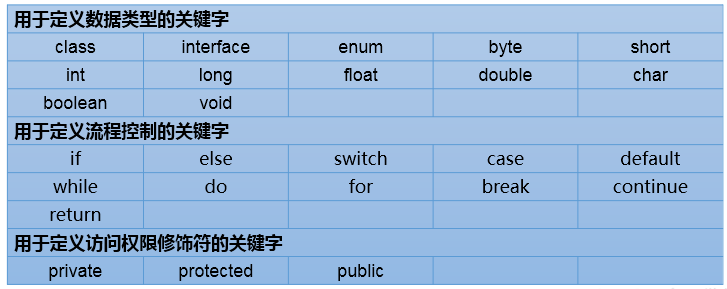
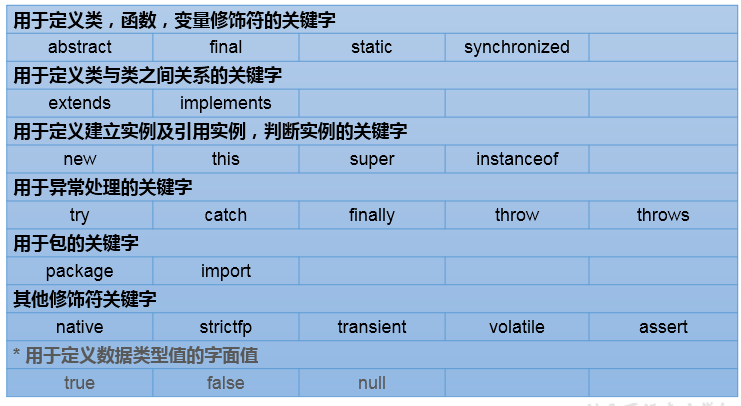
2、 保留字
现有Java版本尚未使用，但以后版本可能会作为关键字使用。自己命名标识符时要避免使用这些保留字
goto 、const。
2、标识符
标识符：
Java 对各种变量、方法和类等要素命名时使用的字符序列称为标识符
技巧：凡是自己可以起名字的地方都叫标识符。定义合法标识符规则：
由26个英文字母大小写，0-9 ，_或 $ 组成
数字不可以开头。
不可以使用关键字和保留字，但能包含关键字和保留字。
Java中严格区分大小写，长度无限制。
标识符不能包含空格。
3、变量
1、变量的分类
1 按数据类型分类
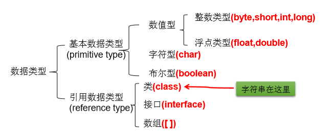
2 按声明的位置的不同
- 在方法体外，类体内声明的变量称为成员变量。
- 在方法体内部声明的变量称为局部变量。
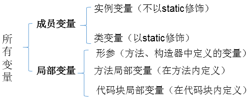
3 数据类型
整型：byte(1字节=8bit) \ short(2字节) \ int(4字节) \ long(8字节)
① byte范围：-128 ~ 127
② 声明long型变量，必须以”l”或”L”结尾
③ 通常，定义整型变量时，使用int型。
④ 整型的常量，默认类型是：int型
浮点型：float(4字节) \ double(8字节)
① 浮点型，表示带小数点的数值
② float表示数值的范围比long还大
③ 定义float类型变量时，变量要以”f”或”F”结尾
④ 通常，定义浮点型变量时，使用double型。
⑤ 浮点型的常量，默认类型为：double
字符型：char (1字符=2字节)
① 定义char型变量，通常使用一对’’,内部只能写一个字符
② 表示方式：1.声明一个字符 2.转义字符 3.直接使用 Unicode 值来表示字符型常量
布尔型：boolean
① 只能取两个值之一：true 、 false
② 常常在条件判断、循环结构中使用
2、基本数据类型转换
1 自动类型转换：
容量小的类型自动转换为容量大的数据类型。数据类型按容 量大小排序为：
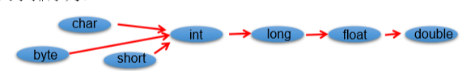
- 有多种类型的数据混合运算时，系统首先自动将所有数据转换成容量最大的 那种数据类型，然后再进行计算。
- byte,short,char之间不会相互转换，他们三者在计算时首先转换为int类型。
- boolean类型不能与其它数据类型运算。
- 当把任何基本数据类型的值和字符串(String)进行连接运算时(+)，基本数据类 型的值将自动转化为字符串(String)类型
2 强制类型转换
(只涉及7种基本数据类型）：自动类型提升运算的逆运算。
注意点：强制类型转换，可能导致精度损失。
3 String与8种基本数据类型间的运算
- String不是基本数据类型，属于引用数据类型
- 使用方式与基本数据类型一致。例如：String str = “abcd”;
4、运算符
- 位运算符
- 位运算符操作的都是整型的数据
- << ：在一定范围内，每向左移1位，相当于 * 2
- >>:在一定范围内，每向右移1位，相当于 / 2
三、数组
1、数组的理解
数组(Array)，是多个相同类型数据一定顺序排列的集合，并使用一个名字命名，并通过编号的 方式对这些数据进行统一管理。
2、数组相关的概念
数组名 元素 角标、下标、索引 数组的长度：元素的个数
3、数组的特点
- 数组是序排列的
- 数组属于引用数据类型的变量。数组的元素，既可以是基本数据类型，也可以是引用数据类型
- 创建数组对象会在内存中开辟一整块连续的空间
- 数组的长度一旦确定，就不能修改。
4、数组的分类
① 按照维数：一维数组、二维数组、。。。
② 按照数组元素的类型：基本数据类型元素的数组、引用数据类型元素的数组
5、数据结构
- 数据与数据之间的逻辑关系：集合（关系很弱）、一对一（数组里面的元素）、一对多（二叉树）、多对多（社交网络）
- 数据的存储结构： 线性表：顺序表（比如：数组）、链表、栈、队列 树形结构：二叉树 图形结构：
6、数组的排序算法
- 选择排序：
- 直接选择排序、堆排序
- 交换排序：
- 冒泡排序、快速排序
- 插入排序：
- 直接插入排序、折半插入排序、希尔排序
- 归并排序
- 桶排序
- 基数排序
7、Arrays 工具类的使用
定义在java.util包下。
Arrays:提供了很多操作数组的方法。
1 | { |
8、数组的常见异常
数组角标越界异常：
ArrayIndexOutOfBoundsException
空指针异常：
NullPointerException
四、面向对象(上)
1、面向对象的三大特征
Object Oriented Programming
- 封装 (Encapsulation)
- 继承 (Inheritance)
- 多态 (Polymorphism)
2、核心概念
- 类是对一类事物的描述，是抽象的、概念上的定义
- 对象是实际存在的该类事物的每个个体，因而也称为实例(instance)。
可以理解为：==类 = 抽象概念的人==；==对象 = 实实在在的某个人==
3、类的成员
属 性：对应类中的成员变量
行 为：对应类中的成员方法
4、属性
语法格式：
修饰符 数据类型 属性名 = 初始化值 ;
说明1: 修饰符
- 常用的权限修饰符有：private、缺省、protected、public
- 其他修饰符：static、final (暂不考虑)
说明2：数据类型
- 任何基本数据类型(如int、Boolean) 或 任何引用数据类型。
- 说明3：属性名
- 属于标识符，符合命名规则和规范即可。
- 在方法体外，类体内声明的变量称为成员变量。
- 在方法体内部声明的变量称为局部变量。
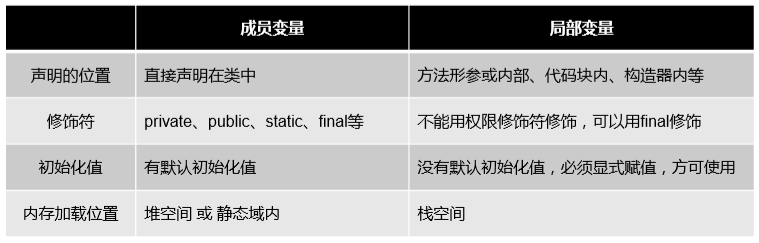
5、方法
1、什么是方法
- 方法是类或对象行为特征的抽象，用来完成某个功能操作。在某些语言中 也称为函数或过程。
- 将功能封装为方法的目的是，可以实现代码重用，简化代码
- Java里的方法不能独立存在，所有的方法必须定义在类里
2、方法的重载(overload)
重载的概念
在同一个类中，允许存在一个以上的同名方法，只要它们的参数个数或者参数 类型不同即可。
重载的特点：
与返回值类型无关，只看参数列表，且参数列表必须不同。(参数个数或参数类 型)。调用时，根据方法参数列表的不同来区别。
3、可变个数的形参
1 | //JDK5.0：采用可变个数形参来定义方法，传入多个同一类型变量 |
4、封装和隐藏
Java中通过将数据声明为私有的(private)，再提供公共的（public） 方法:getXxx()和setXxx()实现对该属性的操作
6、构造器
1、构造器的特征
- 它具有与类相同的名称
- 它不声明返回值类型。（与声明为void不同）
- 不能被static、final、synchronized、abstract、native修饰，不能有 return语句返回值
2、构造器的作用
创建对象；给对象进行初始化
3、构造器的分类
- 隐式无参构造器（系统默认提供）
- 显式定义一个或多个构造器（无参、有参）
4、构造器重载
1 构造器一般用来创建对象的同时初始化对象
2 构造器重载使得对象的创建更加灵活，方便创建各种不同的对象。
3 构造器重载，参数列表必须不同
7、this关键字
- 它在方法内部使用，即这个方法所属对象的引用；
- 它在构造器内部使用，表示该构造器正在初始化的对象。
使用this，调用属性、方法
使用this调用本类的构造器
五、面向对象(中)
1、继承性
1、为什么要有继承
多个类中存在相同属性和行为时，将这些内容抽取到单独一个类中， 那么多个类无需再定义这些属性和行为，只要继承那个类即可。
2、作用：
- 继承的出现减少了代码冗余，提高了代码的复用性。
- 继承的出现，更有利于功能的扩展。
- 继承的出现让类与类之间产生了关系，提供了多态的前提。
- ==注意：不要仅为了获取其他类中某个功能而去继承==
3、注意
子类继承了父类，就继承了父类的方法和属性。
在子类中，可以使用父类中定义的方法和属性，也可以创建新的数据和方法。
在Java 中，继承的关键字用的是“extends”，即子类不是父类的子集， 而是对父类的“扩展”。
子类不能直接访问父类中私有的(private)的成员变量和方法
Java只支持单继承和多层继承，不允许多重继承
4、方法的重写
1、定义
在子类中可以根据需要对从父类中继承来的方法进行改造，也称为方法的重置、覆盖。在程序执行时，子类的方法将覆盖父类的方法。
2、要求
- 子类重写的方法必须和父类被重写的方法具有相同的方法名称、参数列表
- 子类重写的方法的返回值类型不能大于父类被重写的方法的返回值类型
- 子类重写的方法使用的访问权限不能小于父类被重写的方法的访问权限
- 子类不能重写父类中声明为private权限的方法
- 子类方法抛出的异常不能大于父类被重写方法的异常
3、 注意
子类与父类中同名同参数的方法必须同时声明为非static的(即为重写)，或者同时声明为 static的（不是重写）。因为static方法是属于类的，子类无法覆盖父类的方法。
==override是覆盖，子类覆盖父类的方法。 overwrite是重写，同一类内，同名不同参的方法。==
5、关键字：super
1、在Java类中使用super来调用父类中的指定操作：
- super可用于访问父类中定义的属性
- super可用于调用父类中定义的成员方法
- super可用于在子类构造器中调用父类的构造器
2、注意：
- 尤其当子父类出现同名成员时，可以用super表明调用的是父类中的成员
- super的追溯不仅限于直接父类
- super和this的用法相像，this代表本类对象的引用，super代表父类的内存 空间的标识
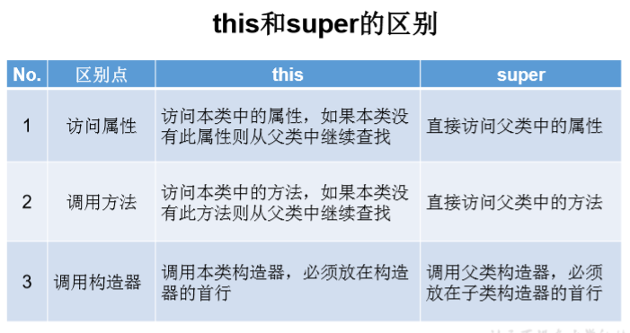
2、多态性
1、多态性是什么
多态性，是面向对象中最重要的概念，在Java中的体现：
- 对象的多态性：父类的引用指向子类的对象
- Person p2 = new Man();
- p2.eat() 多态的使用:当调用子父类同名同参数的方法时，实际执行的是子类重写父类的方法
==虚拟方法调用(Virtual Method Invocation)==
有了对象的多态性以后，我们在编译期，只能调用父类中声明的方法，但在运行期，我们实际执行的是子类重写父类的方法。
总结:编译，看左边，运行，看右边。
多态性的使用前提:①类的继承关系②方法的重写
运行的时候 动态绑定
多态性只体现在方法上，不适用于属性！
2、instanceof 操作符
x instanceof A：检验x是否为类A的对象，返回值为boolean型。
3、Object类的使用
- Object类是所有Java类的根父类
- 如果在类的声明中未使用extends关键字指明其父类，则默认父类 为java.lang.Object类
4、==操作符与equals方法
- = =
- 基本类型比较值:只要两个变量的值相等，即为true。
- 引用类型比较引用(是否指向同一个对象)：只有指向同一个对象时，== 才返回true。
- equals()：
- 只能比较引用类型，其作用与“==”相同,比较是否指向同一个对象。
- obj1.equals(obj2)
六、面向对象(下)
1、static
当我们编写一个类时，其实就是在描述其对象的属性和行为，而并没有产生实质上 的对象，只有通过new关键字才会产生出对象，这时系统才会分配内存空间给对象， 其方法才可以供外部调用。我们有时候希望无论是否产生了对象或无论产生了多少 对象的情况下，==某些特定的数据在内存空间里只有一份==，例如所有的中国人都有个 国家名称，每一个中国人都共享这个国家名称，不必在每一个中国人的实例对象中 都单独分配一个用于代表国家名称的变量。
- 在Java类中，可用static修饰属性、方法、代码块、内部类
- 使用static 修饰属性：静态变量（类变量）
- 属性：按照是否使用static 修饰，又分为 静态属性，非静态属性（实例变量）
- 实例变量：我们创建了类的对个对象，每个对象都有独立的拥有一套类中的非静态属性，当修改其中一个对象的非静态属性时，不会导致其他对象中同样属性值的修改。
- 静态变量：我们创建了多个对象，多个对象共享同一个静态变量，当通过某一个对象修改静态属性时，会导致其他对象调用此静态变量时，是修改过了的！
- ① 静态变量随着类的加载而加载
- ②静态变量的加载早于对象的创建
- ③ 由于类只会加载一次，则静态变量只会在内存中存在一份，存在方法区静态域中。
- 使用static 修饰方法
- 随着类的加载而加载，可以通过 “类.静态方法”的方式进行调用
- 静态方法中，只能调用静态的方法或属性，非静态方法中，既可以调用非静态的方法或属性，也可以调用静态的方法或属性
- static 注意点
- 在静态的方法内，不能使用this关键字、super关键字
- 关于静态属性和静态方法的使用，大家都从生命周期的角度去理解。
2、单例设计模式
==单例设计模式==： 所谓类的单例设计模式，就是采取一定的方法保证在整个的软件系统中，对 某个类只能存在一个对象实例，并且该类只提供一个取得其对象实例的方法。
1、单例(Singleton)设计模式-饿汉式
1 | class Singleton { |
2、单例(Singleton)设计模式-懒汉式
1 | class Singleton { |
单例模式的优点： 由于单例模式只生成一个实例，减少了系统性能开销，当一个对象的 产生需要比较多的资源时，如读取配置、产生其他依赖对象时，则可 以通过在应用启动时直接产生一个单例对象，然后永久驻留内存的方 式来解决。
3、代码块
代码块(或初始化块)的作用：
- 对Java类或对象进行初始化
代码块(或初始化块)的分类：
- 一个类中代码块若有修饰符，则只能被static修饰，称为静态代码块 (static block)，没有使用static修饰的，为非静态代码块。
4、final
在Java中声明类、变量和方法时，可使用关键字final来修饰,表示“最终的”。
final标记的类不能被继承。提高安全性，提高程序的可读性。
final标记的方法不能被子类重写。
final标记的变量(成员变量或局部变量)即称为常量。名称大写，且只 能被赋值一次。
- final标记的成员变量必须在声明时或在每个构造器中或代码块中显式赋 值，然后才能使用。
- final double MY_PI = 3.14;
5、抽象类和抽象方法
随着继承层次中一个个新子类的定义，类变得越来越具体，而父类则更一般，更通用。类的设计应该保证父类和子类能够共享特征。有时将一个父类设计得非常抽象，以至于它没有具体的实例，这样的类叫做==抽象类==。
- 用abstract关键字来修饰一个类，这个类叫做抽象类。
- 用abstract来修饰一个方法，该方法叫做抽象方法。
- 抽象方法：只有方法的声明，没有方法的实现。以分号结束：
- 比如：public abstract void talk();
- ==含有抽象方法的类必须被声明为抽象类==。
- ==抽象类不能被实例化==。抽象类是用来被继承的，抽象类的子类必须重 写父类的抽象方法，并提供方法体。若没有重写全部的抽象方法，仍 为抽象类。
- 不能用abstract修饰变量、代码块、构造器；
- 不能用abstract修饰私有方法、静态方法、final的方法、final的类。
6、接口
1、概述
- 一方面，有时必须从几个类中派生出一个子类，继承它们所有的属性和方 法。但是，Java不支持多重继承。有了接口，就可以得到多重继承的效果。
- 另一方面，有时必须从几个类中抽取出一些共同的行为特征，而它们之间又 没有is-a的关系，仅仅是具有相同的行为特征而已。例如：鼠标、键盘、打 印机、扫描仪、摄像头、充电器、MP3机、手机、数码相机、移动硬盘等都 支持USB连接。
- 接口就是规范，定义的是一组规则，体现了现实世界中“如果你是/要…则必须能…”的思想。==继承是一个”是不是”的关系，而接口实现则是 “能不能” 的关系==。
- ==接口的本质是契约，标准，规范==，就像我们的法律一样。制定好后大家都 要遵守。
2、接口的特定
- 用interface来定义。
- 接口中的所有成员变量都默认是由public static final修饰的。
- 接口中的所有抽象方法都默认是由public abstract修饰的。
- ==接口中没有构造器==。
- 接口采用多继承机制
3、代理模式(Proxy)
4、内部类
七、异常处理
1、异常体系结构
Java程序在执行过程中所发生的异常事件可分为两类：
1、Error： Java虚拟机无法解决的严重问题。如：JVM系统内部错误、资源耗尽等严重情况。比如： StackOverflowError和OOM。一般不编写针对性的代码进行处理。
2、Exception：其它因编程错误或偶然的外在因素导致的一般性问题，可以使用针对性的代码进行处理。例如：
- 空指针访问
- 试图读取不存在的文件
- 网络连接中断
- 数组角标越界
2、常见异常
3、try-catch-finally
1 | try{ |
4、throws
try-catch-finally:真正的将异常给处理掉了。 throws的方式只是将异常抛给了方法的调用者。==并没真正将异常处理掉==。
5、手动抛出异常对象
throw 和 throws区别： throw 表示抛出一个异常类的对象，生成异常对象的过程。声明在方法体内。 throws 属于异常处理的一种方式，声明在方法的声明处。
6、自定义异常类
1.如何自定义异常类
- 继承于现有的异常结构：RuntimeException 、Exception
- 提供全局常量：serialVersionUID（对类的唯一标识）
- 提供重载的构造器
2.代码示例
1 | public class MyException extends Exception{ |
八、多线程
1、基本概念
程序(program)是为完成特定任务、用某种语言编写的一组指令的集合。即指一 段静态的代码，静态对象。
进程(process)是程序的一次执行过程，或是==正在运行的一个程序==。是一个动态 的过程：有它自身的产生、存在和消亡的过程。——生命周期
- 如：运行中的QQ，运行中的MP3播放器
- 程序是静态的，进程是动态的
- ==进程作为资源分配的单位==，系统在运行时会为每个进程分配不同的内存区域
线程(thread)，进程可进一步细化为线程，是一个程序内部的一条执行路径。
- 若一个进程同一时间并行执行多个线程，就是支持多线程的
- ==线程作为调度和执行的单位，每个线程拥有独立的运行栈和程序计数器(pc)==，线程切换的开 销小
- 一个进程中的多个线程共享相同的内存单元/内存地址空间它们从同一堆中分配对象，可以 访问相同的变量和对象。这就使得线程间通信更简便、高效。但多个线程操作共享的系统资 源可能就会带来安全的隐患。
2、线程的创建和使用
- Java语言的JVM允许程序运行多个线程，它通过==java.lang.Thread== 类来体现。
1、方式一:继承于Thread类
1、使用方法
1 创建一个继承于Thread类的子类
2 ==重写Thread类的run()==
3 创建Thread类的子类的对象
4 通过此对象调用start()
2、注意事项
1、如果自己手动调用run()方法，那么就只是普通方法，没有启动多线程模式。
2、run()方法由JVM调用，什么时候调用，执行的过程控制都有操作系统的CPU
调度决定。3、想要启动多线程，必须调用start方法。
4、一个线程对象只能调用一次start()方法启动，如果重复调用了，则将抛出以上 的异常“IllegalThreadStateException”。
3、Thread 类的常用方法
- void start(): 启动线程，并执行对象的run()方法
- run(): 线程在被调度时执行的操作
- String getName(): 返回线程的名称
- void setName(String name):设置该线程名称
- static Thread currentThread(): 返回当前线程。在Thread子类中就 是this，通常用于主线程和Runnable实现类
- static void yield()（礼让）：线程让步
- 暂停当前正在执行的线程，把执行机会让给优先级相同或更高的线程
- 若队列中没有同优先级的线程，忽略此方法
- join() （插队）：当某个程序执行流中调用其他线程的 join() 方法时，调用线程将 被阻塞，直到 join() 方法加入的 join 线程执行完为止
- 低优先级的线程也可以获得执行
- static void sleep(long millis)：(指定时间:毫秒)
- 令当前活动线程在指定时间段内放弃对CPU控制,使其他线程有机会被执行,时间到后 重排队。
- 抛出InterruptedException异常
2、实现Runnable接口
1、使用方法
1 定义子类，实现Runnable接口。
2 子类中重写Runnable接口中的run方法。
3 通过Thread类含参构造器创建线程对象。
4 将Runnable接口的子类对象作为实际参数传递给Thread类的构造器中。
5 调用Thread类的start方法：开启线程，调用Runnable子类接口的run方法。
3、两种方式的对比
1、区别
- 继承Thread：线程代码存放Thread子类run方法中。
- 实现Runnable：线程代码存在接口的子类的run方法。
2、实现方式的好处
- 避免了单继承的局限性
- 多个线程可以共享同一个接口实现类的对象，非常适合多个相同线 程来处理同一份资源。
4、线程的生命周期
Thread.State类定义了线程的几种状态
- 新建： 当一个Thread类或其子类的对象被声明并创建时，新生的线程对象处于新建 状态
- 就绪：处于新建状态的线程被start()后，将进入线程队列等待CPU时间片，此时它已 具备了运行的条件，只是没分配到CPU资源
- 运行：当就绪的线程被调度并获得CPU资源时,便进入运行状态， run()方法定义了线 程的操作和功能
- 阻塞：在某种特殊情况下，被人为挂起或执行输入输出操作时，让出 CPU 并临时中 止自己的执行，进入阻塞状态
- 死亡：线程完成了它的全部工作或线程被提前强制性地中止或出现异常导致结束
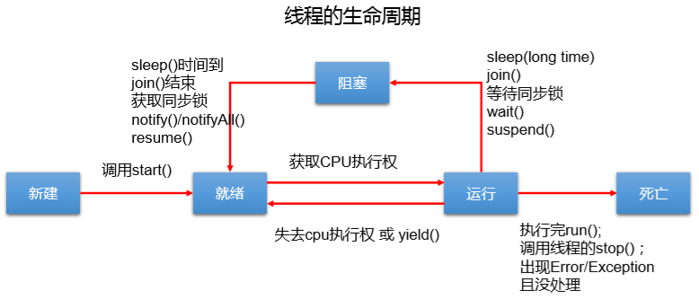
5、线程的同步
1、背景
例子：创建个窗口卖票，总票数为100张.使用实现Runnable接口的方式
- 问题：卖票过程中，出现了重票、错票 –>出现了线程的安全问题
- 问题出现的原因：当某个线程操作车票的过程中，尚未操作完成时，其他线程参与进来，也操作车票。
- 如何解决：当一个线程a在操作ticket的时候，其他线程不能参与进来。直到线程a操作完ticket时，其他线程才可以开始操作ticket。这种情况即使线程a出现了阻塞，也不能被改变。
2、Java解决方案：同步机制
在Java中，我们通过同步机制，来解决线程的安全问题。
1、方式一：同步代码块
1 | synchronized(同步监视器){//同步监视器就是需要同步线程的公共对象 |
说明：
- 操作共享数据的代码，即为需要被同步的代码。 –>不能包含代码多了，也不能包含代码少了。
- 共享数据：多个线程共同操作的变量。比如：ticket就是共享数据。
- 同步监视器，俗称：锁。任何一个类的对象，都可以充当锁。
- 要求多个线程必须要共用同一把锁。
- 在实现Runnable接口创建多线程的方式中，我们可以考虑使用this充当同步监视器。
- 在继承Thread类创建多线程的方式中，慎用this充当同步监视器，考虑使用当前类充当同步监视器。
代码示例
1 | package com.wj.Object; |
2、方式二：同步方法
如果操作共享数据的代码完整的声明在一个方法中，我们不妨将此方法声明同步的。
1 | public synchronized void show(String namer){ |
1 | public class Ticket3 implements Runnable { |
3、线程的同步问题
1、单例模式，懒汉式-线程不安全的
2、线程的死锁问题
不同的线程分别占用对方需要的同步资源不放弃，都在等待对方放弃 自己需要的同步资源，就形成了线程的死锁
出现死锁后，不会出现异常，不会出现提示，只是所有的线程都处于 阻塞状态，无法继续
解决方法
- 专门的算法、原则
- 尽量减少同步资源的定义
- 尽量避免嵌套同步
4、Lock锁
从JDK 5.0开始，Java提供了更强大的线程同步机制–通过显式定义同步锁对象来实现同步。同步锁使用Lock对象充当。
java.util.concurrent.locks.Lock接口是控制多个线程对共享资源进行访问的工具。锁提供了对共享资源的独占访问，每次只能有一个线程对Lock对象加锁，线程开始访问共享资源之前应先获得Lock对象。
ReentrantLock类实现了Lock，它拥有与 synchronized相同的并发性和内存语义，在实现线程安全的控制中，比较常用的是 Reentrantlock，可以显式加锁、释放锁。
1 | class Window implements Runnable{ |
5、面试题
1、synchronized 与 Lock的异同？
相同：二者都可以解决线程安全问题
不同：synchronized机制在执行完相应的同步代码以后，自动的释放同步监视器
Lock需要手动的启动同步（lock()，同时结束同步也需要手动的实现（unlock()）
使用的优先顺序：
Lock—> 同步代码块（已经进入了方法体，分配了相应资源 ) —>同步方法（在方法体之外)
利弊： 同步的方式，解决了线程的安全问题。—好处 操作同步代码时，只能一个线程参与，其他线程等待。相当于是一个单线程的过程，效率低。
2、Java是如何解决线程安全问题的，有几种方式？并对比几种方式的不同
利用同步锁的方式，有三种方式同步代码块、同步方法和用lock方法
6、线程的通讯
为了解决线程的死锁问题，引入线程通讯
1. 线程通信涉及到的三个方法：
- wait():一旦执行此方法，当前线程就进入阻塞状态，并释放同步监视器。
- notify():一旦执行此方法，就会唤醒被wait的一个线程。如果有多个线程被wait，就唤醒优先级高的那个。
- notifyAll():一旦执行此方法，就会唤醒所有被wait的线程。
2. 说明：
wait()，notify()，notifyAll()三个方法必须使用在同步代码块或同步方法中。
wait()，notify()，notifyAll()三个方法的调用者必须是同步代码块或同步方法中的同步监视器。
否则，会出现IllegalMonitorStateException异常
wait()，notify()，notifyAll()三个方法是定义在java.lang.Object类中。
代码示例：
使用两个线程打印 1-100，线程1, 线程2 交替打印。
1 | class MyThread implements Runnable { |
3、面试题
sleep() 和 wait()的异同？
相同点：一旦执行方法，都可以使得当前的线程进入阻塞状态。
不同点：
1）两个方法声明的位置不同：Thread类中声明sleep() , Object类中声明wait()
2）调用的要求不同：sleep()可以在任何需要的场景下调用。 wait()必须使用在同步代码块或同步方法中
3）关于是否释放同步监视器：如果两个方法都使用在同步代码块或同步方法中，sleep()不会释放锁，wait()会释放锁。
4、生产者消费者问题
生产者(Productor)将产品交给店员(Clerk)，而消费者(Customer)从店员处 取走产品，店员一次只能持有固定数量的产品(比如:20），如果生产者试图 生产更多的产品，店员会叫生产者停一下，如果店中有空位放产品了再通 知生产者继续生产；如果店中没有产品了，店员会告诉消费者等一下，如 果店中有产品了再通知消费者来取走产品。
1 | package com.wj.PC; |
7、新增线程创建方式
1、新增方式一：实现Callable接口
- 创建一个实现Callable的实现类
- 实现call方法，将此线程需要执行的操作声明在call()中
- 创建Callable接口实现类的对象
- 将此Callable接口实现类的对象作为传递到FutureTask构造器中，创建FutureTask的对象
- 将FutureTask的对象作为参数传递到Thread类的构造器中，创建Thread对象，并调用start()
- 获取Callable中call方法的返回值
1 | //1.创建一个实现Callable的实现类 |
如何理解实现Callable接口的方式创建多线程比实现Runnable接口创建多线程方式强大？
- call()可以返回值的。
- call()可以抛出异常，被外面的操作捕获，获取异常的信息
- Callable是支持泛型的
2、新增方式二：使用线程池
背景：经常创建和销毁、使用量特别大的资源，比如并发情况下的线程对性能影响很大。
解决方案：
提前创建好多个线程，放入线程池中，使用时直接获取，使用完放回池中。可以避免频繁创建销毁、实现重复利用。类似生活中的公共交通工具。
实现方法：
- 提供指定线程数量的线程池
- 执行指定的线程的操作。需要提供实现Runnable接口或Callable接口实现类的对象
- 关闭连接池
相关API：
1 | JDK 5.0起提供了线程池相关AP|： Executor Service和 Executors |
1 | class NumberThread implements Runnable{ |
应用线程池的好处：
提高响应速度（减少了创建新线程的时间）
降低资源消耗（重复利用线程池中线程，不需要每次都创建）
便于线程管理
corePoolSize：核心池的大小
maximumPoolSize：最大线程数
keepAliveTime：线程没任务时最多保持多长时间后会终止
8、面试题：
Java中多线程的创建有几种方式？四种。
JDK 5.0以前：
- 即继承Thread类重run方法
- 实现Runnable接口实现run方法
JDK 5.0以后：
- 实现callable接口，实现call方法
- 利用线程池
九、Java常用类
1、String类
java.lang.String类的使用
1、概述
String:字符串，使用一对””引起来表示。
- String声明为final的，不可被继承
- String 实现了Serializable接口：表示字符串是支持序列化的。 实现了Comparable接口：表示String可以比较大小
- String内部定义了final char[] value用于存储字符串数据
- String:代表不可变的字符序列。简称：不可变性。
- 体现：
- 4.1.当对字符串重新赋值时，需要重写指定内存区域赋值，不能使用原有的value进行赋值。
- 4.2.当对现有的字符串进行连接操作时，也需要重新指定内存区域赋值，不能使用原有的value进行赋值。
- 4.3.当调用String的replace()方法修改指定字符或字符串时，也需要重新指定内存区域赋值，不能使用原有的value进行赋值。
- 通过字面量的方式（区别于new给一个字符串赋值，此时的字符串值声明在字符串常量池中)。
- 字符串常量池中是不会存储相同内容(使用String类的equals()比较，返回true)的字符串的)。
2、String的特性
1. String的不可变性
- 当对字符串重新赋值时，需要重写指定内存区域赋值，不能使用原有的value进行赋值。
- 当对现的字符串进行连接操作时，也需要重新指定内存区域赋值，不能使用原有的value进行赋值。
- 当调用String的replace()方法修改指定字符或字符串时，也需要重新指定内存区域赋值，不能使用原有的value进行赋值。
2. String实例化方法
- 方式一：通过字面量定义的方式
- 方式二：通过new + 构造器的方式
面试题：
String s = new String(“abc”);方式创建对象，在内存中创建了几个对象？
两个:一个是堆空间中new结构，另一个是char[]对应的常量池中的数据：”abc”
1 | //通过字面量定义的方式：此时的s1和s2的数据javaEE声明在方法区中的字符串常量池中。 |
String str1=“abc”;与 String str2= new String(“abc”);的区别?
- 字符串常量存储在字符串常量池，目的是共享
- 字符串非常量对象存储在堆中
3. 字符串拼接方式赋值对比
- 常量与常量的拼接结果在常量池。且常量池中不会存在相同内容的常量。
- 只要其中一个是变量，结果就在堆中。
- 如果拼接的结果调用intern()方法，返回值就在常量池中
4. String使用陷阱
String s1=”a”；
说明：在字符串常量池中创建了一个字面量为”a”的字符串。
s1=s1+”b”
说明：实际上原来的“a”字符串对象已经丢弃了，现在在堆空间中产生了一个字符串s1+”b”（也就是”ab”）。如果多次执行这些改变串内容的操作，会导致大量副本字符串对象存留在内存中，降低效率。如果这样的操作放到循环中，会极大影响程序的性能。
String s2=”ab”； 说明：直接在字符串常量池中创建一个字面量为”ab”的字符串。
String s3=”a”+”b”； 说明：s3指向字符串常量池中已经创建的”ab”的字符串。
String s4=s1.intern()； 说明：堆空间的S1对象在调用 intern()之后，会将常量池中已经存在的”ab”字符串赋值给s4。
5. String类常用方法
1 字符串操作
- int length()：返回字符串的长度： return value.length
- char charAt(int index)： 返回某索引处的字符return value[index]
- boolean isEmpty()：判断是否是空字符串：return value.length == 0
- String toLowerCase()：使用默认语言环境，将 String 中的所字符转换为小写
- String toUpperCase()：使用默认语言环境，将 String 中的所字符转换为大写
- String trim()：返回字符串的副本，忽略前导空白和尾部空白
- boolean equals(Object obj)：比较字符串的内容是否相同
- boolean equalsIgnoreCase(String anotherString)：与equals方法类似，忽略大小写
- String concat(String str)：将指定字符串连接到此字符串的结尾。 等价于用“+”
- int compareTo(String anotherString)：比较两个字符串的大小
- String substring(int beginIndex)：返回一个新的字符串，它是此字符串的从beginIndex开始截取到最后的一个子字符串。
- String substring(int beginIndex, int endIndex) ：返回一个新字符串，它是此字符串从beginIndex开始截取到endIndex(不包含)的一个子字符串。
2 查找字符串中的字符
- boolean contains(CharSequence s)：当且仅当此字符串包含指定的 char 值序列时，返回 true
- int indexOf(String str)：返回指定子字符串在此字符串中第一次出现处的索引
- int indexOf(String str, int fromIndex)：返回指定子字符串在此字符串中第一次出现处的索引，从指定的索引开始
- int lastIndexOf(String str)：返回指定子字符串在此字符串中最右边出现处的索引
- int lastIndexOf(String str, int fromIndex)：返回指定子字符串在此字符串中最后一次出现处的索引，从指定的索引开始反向搜索
3 字符串操作方法
- 替换：
- String replace(char oldChar, char newChar)：返回一个新的字符串，它是通过用 newChar 替换此字符串中出现的所 oldChar 得到的。
- String replace(CharSequence target, CharSequence replacement)：使用指定的字面值替换序列替换此字符串所匹配字面值目标序列的子字符串。
- String replaceAll(String regex, String replacement)：使用给定的 replacement 替换此字符串所匹配给定的正则表达式的子字符串。
- String replaceFirst(String regex, String replacement)：使用给定的 replacement 替换此字符串匹配给定的正则表达式的第一个子字符串。
- 匹配:
- boolean matches(String regex)：告知此字符串是否匹配给定的正则表达式。
- 切片：
- String[] split(String regex)：根据给定正则表达式的匹配拆分此字符串。
- String[] split(String regex, int limit)：根据匹配给定的正则表达式来拆分此字符串，最多不超过limit个，如果超过了，剩下的全部都放到最后一个元素中。
6. String与其他结构的转换
1 String与基本数据类型、包装类之间的转换
String –> 基本数据类型、包装类：调用包装类的静态方法：parseXxx(str)
基本数据类型、包装类 –> String:调用String重载的valueOf(xxx)
1 | public void StringToBasic() { |
2 与字符数组之间的转换
String –> char[]:调用String的toCharArray()
char[] –> String:调用String的构造器
1 | String s1 = "helloword"; |
3 与字节数组之间的转换
编码：String –> byte[]:调用String的getBytes()
解码：byte[] –> String:调用String的构造器
编码：字符串 –>字节 (看得懂 —>看不懂的二进制数据)
解码：编码的逆过程，字节 –> 字符串 （看不懂的二进制数据 —> 看得懂
说明：解码时，要求解码使用的字符集必须与编码时使用的字符集一致，否则会出现乱码。
1 | String s1 ="你好java世界"; |
4 与StringBuffer、StringBuilder之间的转换
1.String –>StringBuffer、StringBuilder: 调用StringBuffer、StringBuilder构造器
1 | String str1 ="helloword"; |
2.StringBuffer、StringBuilder –>String:
①调用String构造器； ②StringBuffer、StringBuilder的toString()
1 | public void StringBuiderOrStringBufferToStringTest() { |
7. JVM中字符串常量池存放位置说明：
jdk 1.6 (jdk 6.0 ,java 6.0):字符串常量池存储在方法区（永久区）
jdk 1.7:字符串常量池存储在堆空间
jdk 1.8:字符串常量池存储在方法区（元空间）
3、StringBuffer和StringBuilder
1、StringBuffer类
1.概述：
java.lang.String.Buffer代表可变的字符序列，JDK1.0中声明，可以对字符串内容进行增删，此时不会产生新的对象。 很多方法与 String相同 作为参数传递时，方法内部可以改变值。
- StringBuffer类不同于 String，其对象必须使用构造器生成。
- 有三个构造器 StringBuffer()：初始容量为16的字符串缓冲区
- StringBuffer(int size)：构造指定容量的字符串缓冲区
- StringBuffer(String str)：将内容初始化为指定字符串内容
2.常用方法：
- StringBuffer append(xxx)：提供了很多的append()方法，用于进行字符串拼接
- StringBuffer delete(int start,int end)：删除指定位置的内容
- StringBuffer replace(int start, int end, String str)：把[start,end)位置替换为str
- StringBuffer insert(int offset, xxx)：在指定位置插入xxx
- StringBuffer reverse() ：把当前字符序列逆转
- public int indexOf(String str)：返回子串的下标
- public String substring(int start,int end):返回一个从start开始到end索引结束的左闭右开区间的子字符串
- public int length()：获取字符串的长度
- public char charAt(int n )：返回指定位置的字符
- public void setCharAt(int n ,char ch)：设置指定位置的字符
总结：
增：append(xxx) ；
删：delete(int start,int end) ；
改：setCharAt(int n ,char ch) / replace(int start, int end, String str) ；
查：charAt(int n ) ；
插：insert(int offset, xxx) ；
长度：length();
遍历：for() + charAt() / toString()；
2、StringBuilder类
StringBuilder和 StringBuffer非常类似，均代表可变的字符序列，而且提供相关功能的方法也一样，只是StringBuilder类没有加线程锁，执行效率更高。
1. String、StringBuffer、StringBuilder三者的对比
- String:不可变的字符序列；底层使用char[]存储；占用内存（会不断的创建和回收对象）
- StringBuffer:可变的字符序列；线程安全的，效率低；线程安全；底层使用char[]存储；
- StringBuilder:可变的字符序列；jdk5.0新增的，线程不安全的，效率高；线程不安全；底层使用char[]存储
注意：作为参数传递的话，方法内部Stng不会改变其值， StringBuffer和 StringBuilder会改变其值。
2、StringBuffer与StringBuilder的内存解析
指导意义：开发中建议大家使用：StringBuffer(int capacity) 或 StringBuilder(int capacity)
3. 对比String、StringBuffer、StringBuilder三者的执行效率
从高到低排列：StringBuilder > StringBuffer > String
2、JDK 8.0以前的日期时间API
1. java.lang.System类
System类提供的 public static long currentTimeMillis()用来返回当前时间与1970年1月1日0时0分0秒之间以毫秒为单位的时间差。(时间戳) 此方法适于计算时间差。
计算世界时间的主要标准有：
UTC（Coordinated Universal Time）
GMT（Greenwich Mean Time）
CST（Central Standard Time）
2. java.util.Date类
表示特定的瞬间，精确到毫秒
1 构造器
Date():使用无参的构造器创建对象可以获取本地当前时间
Date(long date)
2 常用方法
getTime()：返回自1970年1月1日00：00：00GMT以来此Date对象表示的毫秒数
tostring()：把此Date对象转换为以下形式的 String：
3 java.util.Date类与java.sql.Date类
java.util.Date类
java.sql.Date类
3. java.text.SimpleDateFormat类
Date类的AP不易于国际化，大部分被废弃了， java.text.SimpleDateFormat类是一个不与语言环境有关的方式来格式化和解析日期的具体类。
它允许进行格式化：日期→文本、解析：文本→日期
格式化：
SimpleDateFormat()：默认的模式和语言环境创建对象
public SimpleDateFormat(String pattern)：该构造方法可以用参数 pattern指定的格式创建一个对象，该对象调用：
public String format(Datedate)：方法格式化时间对象date
解析： public Date parse(String source)：从给定字符串的开始解析文本，以生成个日期
1. SimpleDateFormat对日期Date类的格式化和解析
两个操作：
1.1 格式化：日期 —>字符串
1.2 解析：格式化的逆过程，字符串 —> 日期
2. SimpleDateFormat的实例化:new + 构造器
照指定的方式格式化和解析：调用带参的构造器
1 | SimpleDateFormat sdf1 = new SimpleDateFormat("yyyyy.MMMMM.dd GGG hh:mm aaa"); |
1 | public void test2() throws ParseException { |
4. Calendar类：日历类、抽象类
Calendar是一个抽象基类，主用用于完成日期字段之间相互操作的功能。
- 获取 Calenda实例的方法 使用 Calendar.getInstance()方法 调用它的子类 GregorianCalendarl的构造器。
- 一个 Calendar的实例是系统时间的抽象表示，通过 get(int field)方法来取得想要的时间信息。 比如YEAR、MONTH、DAY_OF_WEEK、HOUR_OF_DAY、MINUTE、SECOND public void set(int field,int value) public void add(int field,int amount) public final Date get Time() public final void set Time(Date date)
- 注意 获取月份时：一月是0，二月是1，以此类推，12月是11 获取星期时：周日是1，周二是2，。。。周六是7
1 实例化
方式一：创建其子类(GregorianCalendar)的对象
方式二：调用其静态方法getInstance()
1 | Calendar calendar = Calendar.getInstance(); |
2 常用方法
get():获取日期
set():设置日期
add():添加、修改日期
getTime:日历类–>Date
setTime:Date–>日历类
1 | Calendar calendar = Calendar.getInstance(); |
3、JDK 8.0中新的日期时间类
1. 日期时间API的迭代：
第一代：jdk 1.0 Date类
第二代：jdk 1.1 Calendar类，一定程度上替换Date类
第三代：jdk 1.8 提出了新的一套API
2. 前两代的问题：
可变性：像日期和时间这样的类应该是不可变的。
偏移性：Date中的年份是从1900开始的，而月份都从0开始。
格式化：格式化只对Date用，Calendar则不行。 此外，它们也不是线程安全的；不能处理闰秒等。
Java 8.0中新引入的java.time API:
Java 8.0吸收了Joda-Time的精华，以一个新的开始为Java创建优秀的APl。新的java.time中包含了所有关于本地日期(LocalDate)、本地时间(Localtime)、本地日期时间(LocalDate time)、时区(ZonedDate time)和持续时间(Duration)的类。历史悠久的Date类新增了tolnstant()方法用于把Date转换成新的表示形式。这些新增的本地化时间日期API大大简化了日期时间和本地化的管理。
3. Java 8.0中新的日期时间API涉及的包:
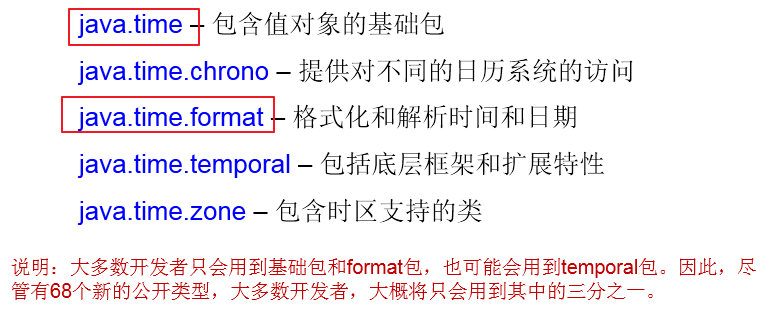
4. 本地日期、本地时间、本地日期时间的使用：
LocalDate / LocalTime / LocalDateTime
1 代码：
1 | public void test1(){ |
5、时间点：Instant
1 说明：
① 时间线上的一个瞬时点。 概念上讲，它只是简单的表示自1970年1月1日0时0分0秒（UTC开始的秒数。）
② 类似于 java.util.Date类
2 代码示例
1 | public void test2(){ |
6、日期时间格式化类：DateTimeFormatter
1 说明：
① 格式化或解析日期、时间
② 类似于SimpleDateFormat
2 常用方法：
实例化方式： 预定义的标准格式。如：ISO_LOCAL_DATE_TIME;ISO_LOCAL_DATE;ISO_LOCAL_TIME 本地化相关的格式。如：ofLocalizedDateTime(FormatStyle.LONG) 自定义的格式。如：ofPattern(“yyyy-MM-dd hh:mm:ss”)
常用方法：
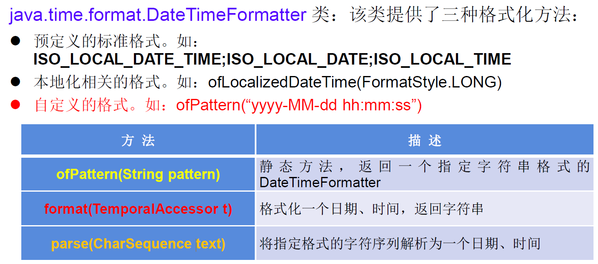
3、代码示例：
1 | public void test3(){ |
7、其它API的使用
- ZoneId：该类中包含了所有的时区信息，一个时区的ID，如 Europe/Paris
- ZonedDateTime：一个在ISO-8601日历系统时区的日期时间，如 2007-1203T10:15:30+01:00 Europe/Paris。
- 其中每个时区都对应着ID，地区ID都为“{区域}/{城市}”的格式，例如： Asia/Shanghai等
- Clock：使用时区提供对当前即时、日期和时间的访问的时钟。
- 持续时间：Duration，用于计算两个“时间”间隔
- 日期间隔：Period，用于计算两个“日期”间隔
- TemporalAdjuster : 时间校正器。有时我们可能需要获取例如：将日期调整 到“下一个工作日”等操作。
- TemporalAdjusters : 该类通过静态方法 (firstDayOfXxx()/lastDayOfXxx()/nextXxx
1 | public void test1(){ |
4、Java比较器
1. Java比较器的使用背景：
- Java中的对象，正常情况下，只能进行比较：== 或 != 。不能使用 > 或 < 的
- 但是在开发场景中，我们需要对多个对象进行排序，言外之意，就需要比较对象的大小。
- 如何实现？使用两个接口中的任何一个：Comparable（自然排序） 或 Comparator（定制排序）
2. 自然排序：使用Comparable接口
2.1 说明
- 像String、包装类等实现了Comparable接口，重写了compareTo(obj)方法，给出了比较两个对象大小的方式。
- 像String、包装类重写compareTo()方法以后，进行了从小到大的排列
- 重写compareTo(obj)的规则： 如果当前对象this大于形参对象obj，则返回正整数， 如果当前对象this小于形参对象obj，则返回负整数， 如果当前对象this等于形参对象obj，则返回零。
- 对于自定义类来说，如果需要排序，我们可以让自定义类实现Comparable接口，重写compareTo(obj)方法。在compareTo(obj)方法中指明如何排序
- Comparable的典型实现：(默认都是从小到大排列的) String：按照字符串中字符的Uincode值进行比较 Character：按照字符的 Unicode值来进行比较 数值类型对应的包装类以及 BigInteger、BigDecimal：按照它们对应的数值大小进行比较 Boolean：true对应的包装类实例大于false对应的包装类实例 Date、Time等：后面的日期时间比前面的日期时间大
2.2 自定义类代码举例：
1 | public class Goods implements Comparable{ |
3. 定制排序：使用Comparator接口
3.1 说明:
- 背景：
当元素的类型没实现java.lang.Comparable接口而又不方便修改代码，或者实现了java.lang.Comparable接口的排序规则不适合当前的操作，那么可以考虑使用 Comparator 的对象来排序
- 重写compare(Object o1,Object o2)方法，比较o1和o2的大小：
- 如果方法返回正整数，则表示o1大于o2；
- 如果返回0，表示相等；
- 返回负整数，表示o1小于o2。
3.2 代码举例：
1 | Comparator com = new Comparator() { |
4. 两种排序方式对比
- Comparable接口的方式是一定的，保证Comparable接口实现类的对象在任何位置都可以比较大小。
- Comparator接口属于临时性的比较。
5、其他常用类
1.System类
2.Math类
3.BigInteger类、BigDecimal类
十、枚举类&注解
1、枚举类的使用
1. 枚举类的说明：
枚举类的理解：类的对象只有有限个，确定的。我们称此类为枚举类
当需要定义一组常量时，强烈建议使用枚举类
枚举类的实现：
JDK 5.0以前需要自定义
JDK 5.0后新增enum关键字用于定义枚举类
如果枚举类中只一个对象，则可以作为单例模式的实现方式。
枚举类的属性：
枚举类对象的属性不应允许被改动，所以应该使用 private final修饰 枚举类的使用 private final修饰的属性应该在构造器中为其赋值 若枚举类显式的定义了带参数的构造器，则在列出枚举值时也必须对应的传入参数
2. 如何自定义枚举类？
步骤:
- 私有化构造器，保证不能在类的外部创建其对象；
- 在类的内部创建枚举类的示例。声明为：public static final；
- 对象如果有实例变量，应该声明为private final，并在构造器中初始化；
1 | //自定义枚举类 使用 class 关键字 |
3. JDK 5.0 新增使用enum定义枚举类。
- 使用enum定义的枚举类默认继承了java.lang.Enum类，因此不能再继承其他类
- 枚举类的构造器只能使用private权限修饰符
- 枚举类的所有实例必须在枚举类中显式列出(“,”分隔“;”结尾)。列出的实例系统会自动添加public static final修饰
- 必须在枚举类的第一行声明枚举类对象
1 | //使用enum关键字枚举类 |
Enum类的常用方法：
- values()方法：返回枚举类型的对象数组。该方法可以很方便地遍历所有的枚举值。
- valueOf(String str)：可以把一个字符串转为对应的枚举类对象。要求字符串必须是枚举类对象的“名字”.如不是，会有运行时异常IllegalArgumentException
- toString()：返回当前枚举类对象常量的名称
1 | Season1 summer = Season1.SUMMER; |
4、用Enum类定义的枚举类对象分别实现接口：
使用说明：
- 和普通Java类一样，枚举类可以实现一个或多个接口
- 若每个枚举值在调用实现的接口方法呈现相同的行为方式，则只要统一实现该方法即可。
- 若需要每个枚举值在调用实现的接口方法呈现出不同的行为方式，则可以让每个枚举值分别来实现该方法
1 | interface Info{ |
2、注解的使用
1. 注解的理解
① jdk 5.0 新增的功能
② Annotation 其实就是代码里的特殊标记, 这些标记可以在编译, 类加载, 运行时被读取, 并执行相应的处理。通过使用 Annotation,程序员可以在不改变原逻辑的情况下, 在源文件中嵌入一些补充信息。
③ Annotation可以像修饰符一样使用，可以用来修饰包、类、构造器、方法、成员变量、参数、局部变量的声明，这些信息被保存在Annotation的“name = value”对中。
④ 在JavaSE中，注解的使用目的比较简单，例如标记过时的功能，忽略警告等。在JavaEE/Android 中注解占据了更重要的角色，例如用来配置应用程序的任何切面，代替JavaEE旧版中所遗留的繁冗 代码和XML配置等。
⑤ 框架 = 注解 + 反射机制 + 设计模式
2. 注解的使用示例
使用 Annotation时要在其前面增加==@符号==，并把该 Annotation当成个修饰符使用。用于修饰它支持的程序元素
示例一：生成文档相关的注解
@author标明开发该类模块的作者，多个作者之间使用，分割
@version标明该类模块的版本
@see参考转向，也就是相关主题
@since从哪个版本开始增加的
@param对方法中某参数的说明，如果没有参数就不能写
@return对方法返回值的说明，如果方法的返回值类型是void就不能写
@exception对方法可能抛出的异常进行说明，如果方法没有用 throws显式抛出的异常就不能写
其中
- @param @return和@exception这三个标记都是只用于方法的。
- @param的格式要求：@param形参名形参类型形参说明
- @return的格式要求：@return返回值类型返回值说明
- @exception的格式要求：@exception异常类型异常说明
- @param和@ exception可以并列多个
示例二：在编译时进行格式检查(JDK内置的个基本注解)
- @Override: 限定重写父类方法, 该注解只能用于方法
- @Deprecated: 用于表示所修饰的元素(类, 方法等)已过时。通常是因为所修饰的结构危险或存在更好的选择
- @SuppressWarnings: 抑制编译器警告
3. 如何自定义注解
参照@SuppressWarnings定义
- 注解声明为：@interface
- 内部定义成员，通常使用value表示
- 可以指定成员的默认值，使用default定义
- 如果自定义注解没成员，表明是一个标识作
1 | public MyAnnotation { |
使用
1 |
4. 元注解 ：
对现有的注解进行修饰
JDK5.0提供了4个标准的meta-annotation类型，分别是：
- Retention:只能用于修饰一个 Annotation 定义, 用于指定该 Annotation 的生命周期,SOURCE,CLASS(默认),RUNTIME
- Target:用于修饰 Annotation 定义, 用于指定被修饰的 Annotation 能用于 修饰哪些程序元素
- Documented：用于指定被该元 Annotation 修饰的 Annotation 类将被 javadoc 工具提取成文档
- Inherited：被它修饰的 Annotation 将具有继承性。如果某个类使用了被 @Inherited 修饰的 Annotation, 则其子类将自动具有该注解。
5. JDK8中注解的新特性 :
- JDK1.8之后，关于元注解@Target的参数类型ElementType枚举值多了两个TYPE_PARAMETER,TYPE_USE。
- 在Java 8之前，注解只能是在声明的地方所使用，Java8开始，注解可以应用 在任何地方
十一、Java集合
1、集合框架概述
集合、数组都是对多个数据进行存储操作的结构，简称Java容器。 说明：此时的存储，主要指的是内存层面的存储，不涉及到持久化的存储（.txt,.jpg,.avi，数据库中)
1. 数组存储的特点：
一旦初始化以后，其长度就确定了。 数组一旦定义好，其元素的类型也就确定了。我们也就只能操作指定类型的数据了。
比如：String[] arr;int[] arr1;Object[] arr2;
2.数组存储的弊端：
- 一旦初始化以后，其长度就不可修改。
- 数组中提供的方法非常限，对于添加、删除、插入数据等操作，非常不便，同时效率不高。
- 获取数组中实际元素的个数的需求，数组没有现成的属性或方法可用
- 数组存储数据的特点：有序、可重复。对于无序、不可重复的需求，不能满足。
3. 集合存储的优点：
解决数组存储数据方面的弊端。
4. 集合的分类
Java集合可分为Collection和Map两种体系
- Collection接口：单列数据，定义了存取一组对象的方法的集合
- List：元素有序、可重复的集合
- Set：元素无序、不可重复的集
- Map接口：双列数据，保存具有映射关系“key-value对”的集合
5. 集合的框架结构
Collection接口：单列集合，用来存储一个一个的对象
List接口：存储有序的、可重复的数据。 –>“动态”数组
ArrayList：作为List接口的主要实现类，线程不安全的，效率高;底层采用Object[] elementData数组存储
LinkedList：对于频繁的插入删除操作，使用此类效率比ArrayList效率高底层采用双向链表存储
Vector：作为List的古老实现类，线程安全的，效率低;底层采用Object[]数组存储
Set接口：存储无序的、不可重复的数据 –>数学概念上的“集合”
HashSet：作为Set接口主要实现类;线程不安全;可以存null值
LinkedHashSet：作为HashSet的子类;遍历其内部数据时，可以按照添加顺序遍历;对于频繁的遍历操作，LinkedHashSet效率高于HashSet.
TreeSet：可以按照添加对象的指定属性，进行排序。
Map:双列数据，存储key-value对的数据 —类似于高中的函数：y = f(x)
HashMap:作为Map的主要实现类；线程不安全的，效率高；存储null的key和value
LinkedHashMap:保证在遍历map元素时，可以照添加的顺序实现遍历。
原因：在原的HashMap底层结构基础上，添加了一对指针，指向前一个和后一个元素。对于频繁的遍历操作，此类执行效率高于HashMap。TreeMap:保证照添加的key-value对进行排序，实现排序遍历。此时考虑key的自然排序或定制排序
底层使用红黑树Hashtable:作为古老的实现类；线程安全的，效率低；不能存储null的key和value
Properties:常用来处理配置文件。key和value都是String类型
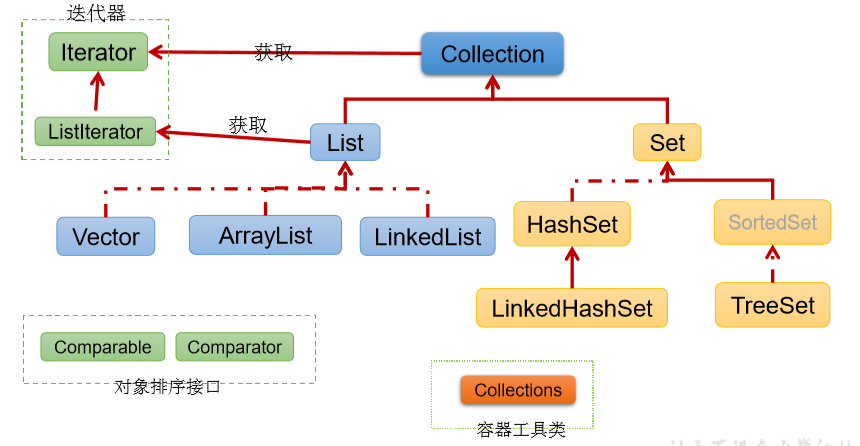
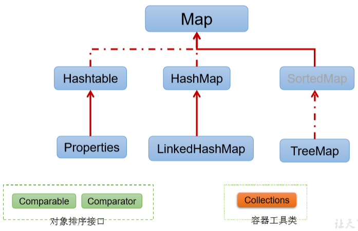
2、Collection 接口方法
添加
- add(Object obj)
- addAll(Collection coll)
获取有效元素个数
- int size()
清空集合
- void clear()
是否为空集合
- boolean isEmpty()
是否包含某个元素
- boolean contains(Object obj):是通过元素的equals方法来判断是否是同一个对象
- boolean containsAll(Collection c):也是调用元素的equals方法来比较的。用两个两个集合的元素逐一比较
删除
- boolean remove(Object obj):通过元素的equals方法判断是否是要删除的那个元素。只会删除找到的第一个元素
- boolean removeAll(Collection coll):取当前集合的差集
取两个集合的交集
- boolean retainAll(Collection c):把交集的结果存在当前的集合中，不影响c
集合是否相等
- boolean equals(Object obj)
转换成对象数组
- Object [] toArray()
获取集合对象的哈希值
- hashCode()
遍历
- iterator()：返回迭代器对象，用于集合遍历
3、Iterator迭代器接口
1. 遍历Collection的两种方式：
① 使用迭代器Iterator ② foreach循环（或增强for循环）
2. java.utils包下定义的迭代器接口：Iterator
2.1说明：
Iterator对象称为迭代器(设计模式的一种)，主要用于遍历 Collection 集合中的元素。 GOF给迭代器模式的定义为：提供一种方法访问一个容器(container)对象中各个元素，而又不需暴露该对象的内部细节。迭代器模式，就是为容器而生。
2.2作用：
遍历集合Collectiton元素
2.3如何获取实例：
coll.iterator()返回一个迭代器实例
2.4遍历的代码实现：
1 | Iterator iterator = coll.iterator(); |
2.5 iterator中remove()方法的使用：
- 测试Iterator中的remove()
- 如果还未调用next()或在上一次调用 next 方法之后已经调用了 remove 方法，再调用remove都会报IllegalStateException。
- 内部定义了remove(),可以在遍历的时候，删除集合中的元素。此方法不同于集合直接调用remove()
代码示例：
1 |
|
3. JDK 5.0新特性–增强for循环：(foreach循环)
3.1 遍历集合举例：
1 |
|
说明：内部仍然调用了迭代器。
3.2. 遍历数组举例：
1 |
|
4、Collection 子接口:List
1. 存储的数据特点：
存储序有序的、可重复的数据。
- 鉴于Java中数组用来存储数据的局限性，我们通常使用List替代数组
- List集合类中元素有序、且可重复，集合中的每个元素都有其对应的顺序索引。
- List容器中的元素都对应一个整数型的序号记载其在容器中的位置，可以根据序号存取容器中的元素。
- JDK AP中List接口的实现类常用的有：==ArrayList、LinkedList和 Vector.==
面试题: ArrayList、 LinkedList. Vector三者的异同?
同:三个类都是实现了List接口，存储数据的特点相同:存储有序的、可重复的数据不同:
不同：
Collection接口：单列集合，用来存储一个一个的对象
List接口：存储序的、可重复的数据。 –>“动态”数组,替换原的数组
ArrayList：作为List接口的主要实现类；线程不安全的，效率高；底层使用Object[] elementData存储
LinkedList：对于频繁的插入、删除操作，使用此类效率比ArrayList高；底层使用双向链表存储
Vector：作为List接口的古老实现类；线程安全的，效率低；底层使用Object[] elementData存储
2. 常用方法：
List除了从 Collection集合继承的方法外，List集合里添加了一些根据索引来操作集合元素的方法。
- void add(int index, Object ele):在index位置插入ele元素
- boolean addAll(int index, Collection eles):从index位置开始将eles中的所有元素添加进来
- Object get(int index):获取指定index位置的元素
- int indexOf(Object obj):返回obj在集合中首次出现的位置
- int lastIndexOf(Object obj):返回obj在当前集合中末次出现的位置
- Object remove(int index):移除指定index位置的元素，并返回此元素
- Object set(int index, Object ele):设置指定index位置的元素为ele
- List subList(int fromIndex, int toIndex):返回从fromIndex到toIndex位置的子集合
总结：
- 增：add(Object obj)
- 删：remove(int index) / remove(Object obj)
- 改：set(int index, Object ele)
- 查：get(int index)
- 插：add(int index, Object ele)
- 长度：size()
- 遍历： ① Iterator迭代器方式② foreach（增强for循环） ③ 普通的循环
3、ArrayList
- ArrayList是List接口的典型实现类、主要实现类
- 本质上，ArrayList是对象引用的一个”变长”数组
- Array Listi的JDK 1.8之前与之后的实现区别？
- JDK 1.7：ArrayList像饿汉式，直接创建一个初始容量为10的数组
- JDK 1.8：ArrayList像懒汉式，一开始创建一个长度为0的数组，当添加第一个元素时再创建一个始容量为10的数组
- Arrays.asList（…）方法返回的List集合，既不是 ArrayList实例，也不是Vector实例。Arrays.asList（…）返回值是一个固定长度的List集合
1 |
|
4、linkedList
对与对于频繁的插入和删除元素操作，建议使用LinkedList类，效率更高
新增方法：
- void addFirst(Object obj)
- void addLast(Object obj)
- Object getFirst()
- Object getlast)()
- Object removeFirst()
- Object removeLast()
Linkedlist：双向链表，内部没有声明数组，而是定义了Node类型的frst和last，用于记录首末元素。同时，定义内部类Node，作为 Linkedlist中保存数据的基本结构。Node除了保存数据，还定义了两个变量：
- prev变量记录前一个元素的位置
- next变量记录下一个元素的位置
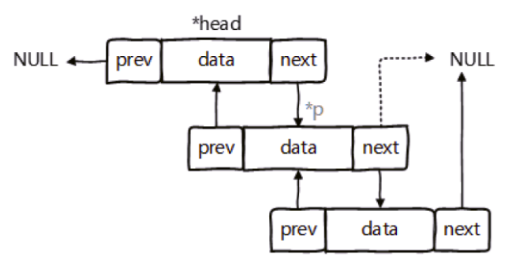
5、Collection 子接口:Set
- Set接口是Collection的子接口，set接口没有提供额外的方法
- Set集合不允许包含相同的元素，如果试把两个相同的元素加入同一个Set集合中，则添加操作失败。（多用于过滤操作，去掉重复数据）
- Set判断两个对象是否相同不是使用==运算符，而是根据equals()方法
Collection接口：单列集合，用来存储一个一个的对象
Set接口：存储无序的、不可重复的数据 –>高中讲的“集合”
HashSet：作为Set接口的主要实现类；线程不安全的；可以存储null值
LinkedHashSet：作为HashSet的子类；遍历其内部数据时，可以按照添加的顺序遍历，对于频繁的遍历操作，LinkedHashSet效率高于HashSet.
TreeSet：可以按照添加对象的指定属性，进行排序。
1.存储的数据特点：
用于存放无序的、不可重复的元素
以HashSet为例说明：
- 无序性：不等于随机性。存储的数据在底层数组中并非照数组索引的顺序添加，而是根据数据的哈希值决定的。
- 不可重复性：保证添加的元素照equals()判断时，不能返回true.即：相同的元素只能添加一个。
2. 元素添加过程：(以HashSet为例)
我们向HashSet中添加元素a,首先调用元素a所在类的hashCode()方法，计算元素a的哈希值，此哈希值接着通过某种算法计算出在HashSet底层数组中的存放位置（即为：索引位置），判断
数组此位置上是否已经有元素：
- 如果此位置上没有其他元素，则元素a添加成功。 —>情况1
- 如果此位置上有其他元素b(或以链表形式存在的多个元素），则比较元素a与元素b的hash值：
- 如果hash值不相同，则元素a添加成功。—>情况2
- 如果hash值相同，进而需要调用元素a所在类的equals()方法：
- equals()返回true,元素a添加失败
- equals()返回false,则元素a添加成功。—>情况3
对于添加成功的情况2和情况3而言：元素a 与已经存在指定索引位置上数据以链表的方式存储。
JDK 7.0 :元素a放到数组中，指向原来的元素。
JDK 8.0 :原来的元素在数组中，指向元素a
总结：七上八下
HashSet底层：数组+链表的结构。（JDK 7.0以前）
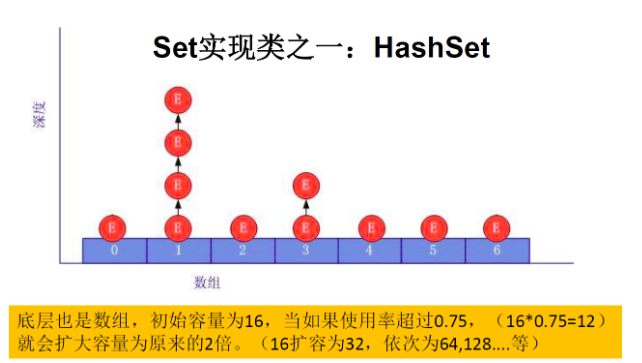
3. 常用方法
Set接口中没额外定义新的方法，使用的都是Collection中声明过的方法。
3.1 重写hashCode()的基本方法
- 在程序运行时，同一个对象多次调用hashCode()方法应该返回相同的值。
- 当两个对象的equals()方法比较返回true时，这两个对象的 hashCode()方法的返回值也应相等。
- 对象中用作equals()方法比较的Field，都应该用来计算hashCode值。
3.2 重写equals()方法基本原则
- 以自定义的 Customer类为例，何时需要重写equals()？
- 当一个类有自己特有的“逻辑相等”概念，当改写equals()的时候，总是要改写 hash Code（），根据一个类的 equals方法(改写后)，两个截然不同的实例有可能在逻辑上是相等的，但是，根据Object.hashCode()方法，它们仅仅是两个对象。
- 因此，违反了“相等的对象必须具有相等的散列码”.
- 结论：复写equals方法的时候一般都需要同时复写 hashCode方法。通常参与计算 hashCode的对象的属性也应该参与到equals()中进行计算。
3.3 Eclipse/IDEA工具里hashCode()重写
以Eclipse/DEA为例，在自定义类中可以调用工具自动重写equals()和hashCode() 问题：为什么用 Eclipse/IDEA复写 hash Code方法，有31这个数字？
- 选择系数的时候要选择尽量大的系数。因为如果计算出来的hash地址越大，所谓的“冲突”就越少，查找起来效率也会提高。（减少冲突）
- 并且31只占用5bits，相乘造成数据溢出的概率较小。
- 31可以由i*31==(<<5)-1来表示，现在很多虚拟机里面都有做相关优化。（提高算法效率）
- 31是一个素数，素数作用就是如果我用一个数字来乘以这个素数，那么最终出来的结果只能被素数本身和被乘数还有1来整除！（减少冲突）
1 |
|
4、HashSet
- Hashset是Set接口的典型实现，大多数时候使用Set集合时都使用这个实现类。
- HashSet按Hash算法来存储集合中的元素，因此具有很好的存取、查找、删除性能。
- HashSet具有以下特点：
- 不能保证元素的排列顺序
- HashSet不是线程安全的
- 集合元素可以是nul
- HashSet集合判断两个元素相等的标准：两个对象通过hashCode()方法比较相等，并且两个对象的equals()方法返回值也相等。
- 对于存放在Set容器中的对象，对应的类一定要重写equals()和hashCode(Object obj)方法，以实现对象相等规则。即：“相等的对象必须具有相等的散列码”
5、LinkedHashSet
- LinkedhashSet是HashSet的子类
- LinkedhashSet根据元素的hashCode值来决定元素的存储位置但它同时使用双向链表维护元素的次序，这使得元素看起来是以插入顺序保存的。
- LinkedhashSet插入性能略低于HashSet，但在迭代访问Set里的全部元素时有很好的性能。
- LinkedhashSet不允许集合元素重复。
6、TreeSet
- Treeset是SortedSet接口的实现类，TreeSet可以确保集合元素处于排序状态。
- 不能添加不同类的对象
- TreeSet底层使用红黑树结构存储数据
- 新增的方法如下：（了解）
- Comparator comparator()
- Object first()
- Object last()
- Object lower(object e)
- Object higher(object e)
- SortedSet subSet(fromElement， toElement)
- SortedSet headSet(toElement)
- SortedSet tailSet(fromElement)
- TreeSet两种排序方法：自然排序和定制排序。默认情况下，TreeSet采用自然排序。
详细介绍：https://www.cnblogs.com/LiaHon/p/11203229.html
6、Map接口
- Map与Collection并列存在。用于保存具有映射关系的数据:key-value
- Map中的key和value都可以是任何引用类型的数据
- Map中的key用set来存放，不允许重复，即同一个Map对象所对应的类，须重写 hashCode()和 equals()方法
- 常用 String类作为Map的“键”
- key和value之间存在单向一对一关系，即通过指定的key总能找到唯一的、确定的value
- Map接口的常用实现类:HashMap、TreeMap、LinkedHashMap和Properties。其中，HashMap是Map接口使用频率最高的实现类
1. 常见实现类结构
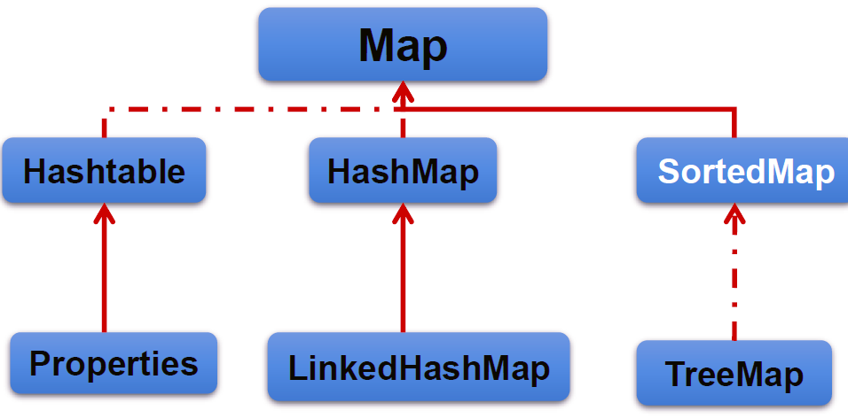
Map:双列数据，存储key-value对的数据 —类似于高中的函数：y = f(x)
HashMap:作为Map的主要实现类；线程不安全的，效率高；存储null的key和value
LinkedHashMap:保证在遍历map元素时，可以照添加的顺序实现遍历。
原因：在原的HashMap底层结构基础上，添加了一对指针，指向前一个和后一个元素。 对于频繁的遍历操作，此类执行效率高于HashMap。
TreeMap:保证照添加的key-value对进行排序，实现排序遍历。此时考虑key的自然排序或定制排序
底层使用红黑树
Hashtable:作为古老的实现类；线程安全的，效率低；不能存储null的key和value
Properties:常用来处理配置文件。key和value都是String类型
1.1 HashMap
- HashMap是Map接口使用频率最高的实现类。
- 允许使用null键和null值，与 HashSet一样，不保证映射的顺序。
- 所有的key构成的集合是set：无序的、不可重复的。所以，key所在的类要重写equals()和 hashCode()
- 所有的value构成的集合是Collection：无序的、可以重复的。所以，value所在的类要重写:equals()
- 一个key-value构成一个entry
- 所有的entry构成的集合是Set：无序的、不可重复的
- HashMap判断两个key相等的标准是：两个key通过equals()方法返回true，hashCode值也相等。
- HashMap判断两个value相等的标准是：两个value通过equals()方法返回true.
1 |
|
1.2 LinkedHashMap
- LinkedHashMap底层使用的结构与HashMap相同，因为LinkedHashMap继承于HashMap.
- 区别就在于：LinkedHashMap内部提供了Entry，替换HashMap中的Node.
- 与Linkedhash Set类似，LinkedHashMap可以维护Map的迭代顺序：迭代顺序与Key-value对的插入顺序一致
1 |
|
1.3 TreeMap
- TreeMap存储Key-Value对时，需要根据key-value对进行排序。TreeMap可以保证所有的 Key-Value对处于有序状态。
- TreeSet底层使用红黑树结构存储数据
- TreeMap的Key的排序:
- 自然排序： TreeMap的所有的Key必须实现Comparable接口，而且所有的Key应该是同一个类的对象，否则将会抛出ClasssCastEXception()
- 定制排序：创建 TreeMap时，传入一个 Comparator对象，该对象负责对TreeMap中的所有key进行排序。此时不需要Map的Key实现Comparable接口
- TreeMap判断两个key相等的标准：两个key通过 compareTo()方法或者compare()方法返回0.
1.4 Hashtable
- Hashtable是个古老的Map实现类，JDK1.0就提供了。不同于 HashMap，Hashtable是线程安全的.
- Hashtable实现原理和HashMap相同，功能相同。底层都使用哈希表结构，查询速度快，很多情况下可以互用
- 与HashMap.不同，Hashtable不允许使用null作为key和value.
- 与HashMap一样，Hashtable也不能保证其中Key-value对的顺序.
- Hashtable判断两个key相等、两个value相等的标准，与HashMap-致.
1.5 Properties
- Properties类是Hashtable的子类，该对象用于处理属性文件
- 由于属性文件里的key、value都是字符串类型，所以Properties里的key和value都是字符串类型
- 存取数据时，建议使用setProperty(String key,String value)方法和getProperty(String key)方法
2. 存储结构的理解：
- Map中的key:无序的、不可重复的，使用Set存储所的key —> key所在的类要重写equals()和hashCode() （以HashMap为例)
- Map中的value:无序的、可重复的，使用Collection存储所的value —>value所在的类要重写equals()
- 一个键值对：key-value构成了一个Entry对象。
- Map中的entry:无序的、不可重复的，使用Set存储所的entry
3. 常用方法
3.1添加、删除、修改操作：
- Object put(Object key,Object value)：将指定key-value添加到(或修改)当前map对象中
- void putAll(Map m):将m中的所有key-value对存放到当前map中
- Object remove(Object key)：移除指定key的key-value对，并返回value
- void clear()：清空当前map中的所有数据
3.2元素查询的操作：
- Object get(Object key)：获取指定key对应的value
- boolean containsKey(Object key)：是否包含指定的key
- boolean containsValue(Object value)：是否包含指定的value
- int size()：返回map中key-value对的个数
- boolean isEmpty()：判断当前map是否为空
- boolean equals(Object obj)：判断当前map和参数对象obj是否相等
3.3 元视图操作的方法：
- Set keySet()：返回所有key构成的Set集合
- Collection values()：返回所有value构成的Collection集合
- Set entrySet()：返回所有key-value对构成的Set集合
总结：常用方法：
- 添加：put(Object key,Object value)
- 删除：remove(Object key)
- 修改：put(Object key,Object value)
- 查询：get(Object key)
- 长度：size()
- 遍历：keySet() / values() / entrySet()
7、Collections 工具类
1.作用：
Collections是一个操作Set、Lit和Map等集合的工具类
Collections中提供了一系列静态的方法对集合元素进行排序、査询和修改等操作，还提供了对集合对象设置不可变、对集合对象实现同步控制等方法
2.常用方法：
2.1排序操作
- reverse(List)：反转 List 中元素的顺序
- shuffle(List)：对 List 集合元素进行随机排序
- sort(List)：根据元素的自然顺序对指定 List 集合元素升序排序
- sort(List，Comparator)：根据指定的 Comparator 产生的顺序对 List 集合元素进行排序
- swap(List，int， int)：将指定 list 集合中的 i 处元素和 j 处元素进行交换
1 |
|
2.2查找、替换
- Object max(Collection)：根据元素的自然顺序，返回给定集合中的最大元素
- Object max(Collection，Comparator)：根据 Comparator 指定的顺序，返回给定集合中的最大元素
- Object min(Collection)
- Object min(Collection，Comparator)
- int frequency(Collection，Object)：返回指定集合中指定元素的出现次数
- void copy(List dest,List src)：将src中的内容复制到dest中
- boolean replaceAll(List list，Object oldVal，Object newVal)：使用新值替换 List 对象的所旧值
1 |
|
十二、泛型
1、泛型简介
1、泛型概述
- 所谓泛型，就是允许在定义类、接口时通过一个标识表示类中某个属性的类型或者是某个方法的返回值及参数类型。这个类型参数将在使用时（例如，继承或实现这个接口，用这个类型声明变量、 创建对象时确定（即传入实际的类型参数，也称为类型实参）。
- 从JDK 5.0以后，Java引入了“参数化类型(Parameterized type)”的概念，允许我们在创建集合时再指定集合元素的类型，正如:List <String>，这表明该List只能保存字符串类型的对象。
- JDK 5.0改写了集合框架中的全部接口和类，为这些接口、类增加了泛型支持，从而可以在声明集合变量、创建集合对象时传入类型实参。
2.泛型的引入背景
集合容器类在设计阶段/声明阶段不能确定这个容器到底实际存的是什么类型的对象，所以在JDK1.5之前只能把元素类型设计为Object，JDK1.5之后使用泛型来解决。因为这个时候除了元素的类型不确定，其他的部分是确定的，例如关于这个元素如何保存，如何管理等是确定的，因此此时把元素的类型设计成一个参数，这个类型参数叫做泛型。Collection<E>，List<E>，ArrayList<E> 这个<E>就是类型参数，即泛型。
3.引入泛型的目的
- 解决元素存储的安全性问题，好比商品、药品标签，不会弄错。
- 解决获取数据元素时，需要类型强制转换的问题，好比不用每回拿商品、药品都要辨别。
Java泛型可以保证如果程序在编译时没有发岀警告，运行时就不会产生ClassCastException异常。同时，代码更加简洁、健壮。
2、集合中使用泛型
① 集合接口或集合类在JDK 5.0时都修改为带泛型的结构。
② 在实例化集合类时，可以指明具体的泛型类型
③ 指明完以后，在集合类或接口中凡是定义类或接口时，内部结构（比如：方法、构造器、属性等）使用到类的泛型的位置，都指定为实例化的泛型类型。
比如：add(E e) —>实例化以后：add(Integer e)
④ 注意点：泛型的类型必须是类，不能是基本数据类型。需要用到基本数据类型的位置，拿包装类替换
⑤ 如果实例化时，没有指明泛型的类型。默认类型为java.lang.Object类型。
3、自定义泛型结构
泛型类、泛型接口、泛型方法
1. 泛型的声明
- interface List
和 class GenTest<K,V>其中，T，K，V，不代表值，而是表示类型。这里使用任意字母都可以。 - 常用T表示，是Type的缩写。
2. 泛型的实例化：
一定要在类名后面指定类型参数的值（类型）。如：
List
Iterator
- T只能是类，不能用基本数据类型填充。但可以使用包装类填充
- 把一个集合中的内容限制为一个特定的数据类型，这就是 generics背后的核心思想
3. 注意点
泛型类可能有多个参数，此时应将多个参数一起放在尖括号内。比如<E1,E2,E3>
泛型类的构造器如下： public GenericClass(){}
而下面是错误的： public GenericClass
{} 实例化后，操作原来泛型位置的结构必须与指定的泛型类型一致。
泛型不同的引用不能相互赋值。
尽管在编译时 ArrayList
和ArrayList 是两种类型，但是，在运行时只有一个ArrayList被加载到JVM中。 泛型如果不指定，将被擦除，泛型对应的类型均按照Object处理，但不等价于Object。
建议：泛型要使用一路都用。要不用，一路都不要用。
如果泛型结构是一个接口或抽象类，则不可创建泛型类的对象。
JDK 7.0，泛型的简化操作： ArrayList
first= new ArrayList<>();（类型推断） 泛型的指定中不能使用基本数据类型，可以使用包装类替换。
在类/接口上声明的泛型，在本类或本接口中即代表某种类型，可以作为非静态属性的类型、非静态方法的参数类型、非静态方法的返回值类型。但在静态方法中不能使用类的泛型。
异常类不能是泛型的。
不能使用new E[]。但是可以：E[] elements= (E[])new Object[capacity];
参考：ArrayList源码中声明：Object[] elementData，而非泛型参数类型数组。
父类有泛型，子类可以选择保留泛型也可以选择指定泛型类型：
- 子类不保留父类的泛型：按需实现
- 没有类型—擦除
- 具体类型
- 子类保留父类的泛型：泛型子类
- 全部保留
- 部分保留
- 结论：子类必须是“富二代”，子类除了指定或保留父类的泛型，还可以增加自己的泛型
- 子类不保留父类的泛型：按需实现
1 | class Father<T1, T2> { |
4、泛型在继承上的体现
5、通配符的使用
6、泛型举例
4、泛型的使用
泛型的三种使用方式：泛型类，泛型方法，泛型接口。
1、泛型类
2、泛型接口
3、泛型通配符
此处 ==？== 是类型实参，而不是类型形参。
4、泛型方法
泛型类，是在实例化类的时候指明泛型的具体类型；泛型方法，是在调用方法的时候指明泛型的具体类型。
十三、IO流
一、File类的使用
1. File类的理解
- File类的一个对象，代表一个文件或一个文件目录(俗称：文件夹)。
- File类声明在java.io包下：文件和文件路径的抽象表示形式，与平台无关。
- File类中涉及到关于文件或文件目录的创建、删除、重命名、修改时间、文件大小等方法，并未涉及到写入或读取文件内容的操作。如果需要读取或写入文件内容，必须使用IO流来完成。
- 想要在Java程序中表示一个真实存在的文件或目录，那么必须有一个File对象，但是Java程序中的一个File对象，可能没有一个真实存在的文件或目录。
- 后续File类的对象常会作为参数传递到流的构造器中，指明读取或写入的”终点”。
2. File的实例化
2.1 常用构造器
- File(String filePath)
- File(String parentPath,String childPath)
- File(File parentFile,String childPath)
代码示例：
1 |
|
2.2 路径分类
- 相对路径：相较于某个路径下，指明的路径。
- 绝对路径：包含盘符在内的文件或文件目录的路径。
说明：
- IDEA中：
- 如果使用JUnit中的单元测试方法测试，相对路径即为当前Module下。
- 如果使用main()测试，相对路径即为当前的Project下。
- Eclipse中：
- 不管使用单元测试方法还是使用main()测试，相对路径都是当前的Project下。
2.3 路径分隔符
windows和DOS系统默认使用“\”来表示
UNIX和URL使用“/”来表示
Java程序支持跨平台运行，因此路径分隔符要慎用。
为了解决这个隐患，File类提供了一个常量： public static final String separator。根据操作系统，动态的提供分隔符。
举例：
1
2
3
4
5
6//windows和DOS系统
File file1 = new File("E:\\io\\test.txt");
//UNIX和URL
File file = new File("E:/io/test.txt");
//java提供的常量
File file = new File("E:"+File.separator+"io"+File.separator+"test.txt");
3. File类的常用方法
3.1 File类的获取功能
- public String getAbsolutePath()：获取绝对路径
- public String getPath() ：获取路径
- public String getName() ：获取名称
- public String getParent()：获取上层文件目录路径。若无，返回null
- public long length() ：获取文件长度（即：字节数）。不能获取目录的长度。
- public long lastModified() ：获取最后一次的修改时间，毫秒值
- 如下的两个方法适用于文件目录：
- public String[] list() ：获取指定目录下的所有文件或者文件目录的名称数组
- public File[] listFiles() ：获取指定目录下的所有文件或者文件目录的File数组
代码示例：
1 |
|
3.2 File类的重命名功能
- public boolean renameTo(File dest):把文件重命名为指定的文件路径
- 注意：file1.renameTo(file2)为例：要想保证返回true,需要file1在硬盘中是存在的，且file2不能在硬盘中存在。
代码示例：
1 |
|
3.3 File类的判断功能
- public boolean isDirectory()：判断是否是文件目录
- public boolean isFile() ：判断是否是文件
- public boolean exists() ：判断是否存在
- public boolean canRead() ：判断是否可读
- public boolean canWrite() ：判断是否可写
- public boolean isHidden() ：判断是否隐藏
代码示例：
1 |
|
3.4 Flie类的创建功能
- 创建硬盘中对应的文件或文件目录
- public boolean createNewFile() ：创建文件。若文件存在，则不创建，返回false
- public boolean mkdir() ：创建文件目录。如果此文件目录存在，就不创建了。如果此文件目录的上层目录不存在，也不创建。
- public boolean mkdirs() ：创建文件目录。如果此文件目录存在，就不创建了。如果上层文件目录不存在，一并创建
代码示例：
1 |
|
3.5 File类的删除功能
- 删除磁盘中的文件或文件目录
- public boolean delete()：删除文件或者文件夹
- 删除注意事项：Java中的删除不走回收站。
4. 内存解析
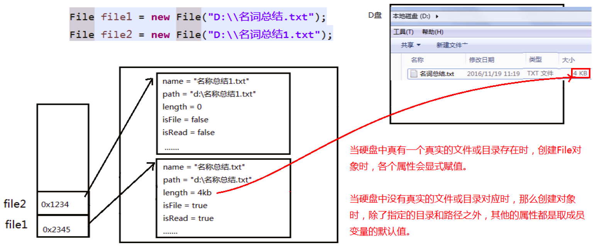
5. 小练习
利用Fie构造器，new一个文件目录file 1）在其中创建多个文件和目录 2）编写方法，实现删除fle中指定文件的操作
1 |
|
判断指定目录下是否有后缀名为jpg的文件，如果有，就输出该文件名称
1 | public class FindJPGFileTest { |
遍历指定目录所有文件名称，包括子文件目录中的文件。 拓展1：并计算指定目录占用空间的大小 拓展2：删除指定文件目录及其下的所有文件
1 | public class ListFileTest { |
二、IO流概述
1. 简述
- IO是Input/Output的缩写，I/O技术是非常实用的技术，用于处理设备之间的数据传输。如读/写文件，网络通讯等。
- Java程序中，对于数据的输入输出操作以“流(stream)”的方式进行。
- Java.IO包下提供了各种“流”类和接口，用以获取不同种类的数据，并通过标准的方法输入或输出数据。
2. 流的分类
操作数据单位：字节流、字符流
- 对于文本文件(.txt,.java,.c,.cpp)，使用字符流处理
- 对于非文本文件(.jpg,.mp3,.mp4,.avi,.doc,.ppt,…)，使用字节流处理
数据的流向：输入流、输出流
- 输入input:读取外部数据（磁盘、光盘等存储设备的数据）到程序（内存）中。
- 输出output:将程序（内存）数据输出到磁盘、光盘等存储设备中。
流的角色：节点流、处理流
节点流：直接从数据源或目的地读写数据。
处理流：不直接连接到数据源或目的地，而是“连接”在已存在的流（节点流或处理流）之上，通过对数据的处理为程序提供更为强大的读写功能。
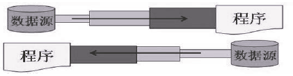
图示：
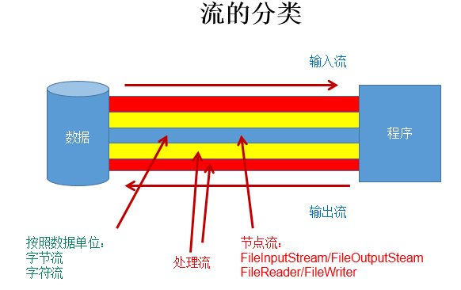
3. IO流的体系分类
3.1 总体分类
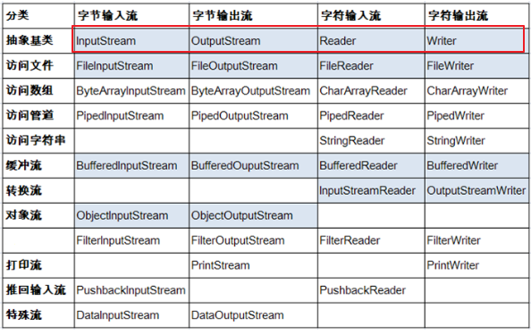
红框为抽象基类，蓝框为常用IO流
3.2 常用的几个IO流结构
| 抽象基类 | 节点流（或文件流） | 缓冲流（处理流的一种） |
|---|---|---|
| InputStream | FileInputStream (read(byte[] buffer)) | BufferedInputStream (read(byte[] buffer)) |
| OutputSteam | FileOutputStream (write(byte[] buffer,0,len) | BufferedOutputStream (write(byte[] buffer,0,len) / flush() |
| Reader | FileReader (read(char[] cbuf)) | BufferedReader (read(char[] cbuf) / readLine()) |
| Writer | FileWriter (write(char[] cbuf,0,len) | BufferedWriter (write(char[] cbuf,0,len) / flush() |
3.3 对抽象基类的说明：
| 抽象基类 | 字节流 | 字符流 |
|---|---|---|
| 输入流 | InputSteam | Reader |
| 输出流 | OutputSteam | Writer |
- 说明：Java的lO流共涉及40多个类，实际上非常规则，都是从如下4个抽象基类派生的。
- 由这四个类派生出来的子类名称都是以其父类名作为子类名后缀。
3.3.1InputSteam & Reader
- InputStream和Reader是所有输入流的基类。
- InputStream（典型实现：FileInputStream）
- int read()
- int read(byte[] b)
- int read(byte[] b,int off,int len)
- Reader（典型实现：FileReader）
- int read()
- int read(char[] c）
- int read(char[] c,int off,int len）
- 程序中打开的文件IO资源不属于内存里的资源，垃圾回收机制无法回收该资源，所以应该显式关闭文件IO资源。
- FileInputStream从文件系统中的某个文件中获得输入字节。FileInputStream用于读取非文本数据之类的原始字节流。要读取字符流，需要使用 FileReader。
InputSteam：
int read()
从输入流中读取数据的下一个字节。返回0到255范围内的int字节值。如果因为已经到达流末尾而没有可用的字节，则返回值-1。
int read(byte[] b)
从此输入流中将最多b.length个字节的数据读入一个byte数组中。如果因为已经到达流末尾而没有可用的字节，则返回值-1.否则以整数形式返回实际读取的字节数。
int read(byte[] b,int off,int len)
将输入流中最多len个数据字节读入byte数组。尝试读取len个字节，但读取的字节也可能小于该值。以整数形式返回实际读取的字节数。如果因为流位于文件末尾而没有可用的字节，则返回值-1。
public void close throws IOException
关闭此输入流并释放与该流关联的所有系统资源。
Reader：
int read()
读取单个字符。作为整数读取的字符，范围在0到65535之间（0x00-0xffff）(2个字节的 Unicode码)，如果已到达流的末尾，则返回-1。
int read（char[] cbuf）
将字符读入数组。如果已到达流的末尾，则返回-1。否则返回本次读取的字符数。
int read（char[] cbuf,int off,int len）
将字符读入数组的某一部分。存到数组cbuf中，从off处开始存储，最多读len个字符。如果已到达流的末尾，则返回-1。否则返回本次读取的字符数。
public void close throws IOException
关闭此输入流并释放与该流关联的所有系统资源
3.3.2 OutputSteam & Writer
- OutputStream和Writer也非常相似：
- void write(int b/int c);
- void write(byte[] b/char[] cbuf);
- void write(byte[] b/char[] buff,int off,int len);
- void flush();
- void close();需要先刷新，再关闭此流
- 因为字符流直接以字符作为操作单位，所以 Writer可以用字符串来替换字符数组，即以 String对象作为参数
- void write(String str);
- void write(String str,int off,int len);
- FileOutputStream从文件系统中的某个文件中获得输出字节。FileOutputstream用于写出非文本数据之类的原始字节流。要写出字符流，需要使用 FileWriter
OutputStream:
void write(int b)
将指定的字节写入此输出流。 write的常规协定是：向输出流写入一个字节。要写入的字节是参数b的八个低位。b的24个高位将被忽略。即写入0~255范围的
void write（byte[] b）
将b.length个字节从指定的byte数组写入此输出流。write（b）的常规协定是：应该与调用wite（b,0,b.length）的效果完全相同。
void write（byte[] b,int off,int len）
将指定byte数组中从偏移量off开始的len个字节写入此输出流。
public void flush()throws IOException
刷新此输出流并强制写出所有缓冲的输出字节，调用此方法指示应将这些字节立即写入它们预期的目标。
public void close throws IOException
关闭此输岀流并释放与该流关联的所有系统资源。
Writer:
void write(int c)
写入单个字符。要写入的字符包含在给定整数值的16个低位中，16高位被忽略。即写入0到65535之间的 Unicode码。
void write(char[] cbuf)
写入字符数组
void write(char[] cbuf,int off,int len)
写入字符数组的某一部分。从off开始，写入len个字符
void write(String str)
写入字符串。
void write(String str,int off,int len)
写入字符串的某一部分。
void flush()
刷新该流的缓冲，则立即将它们写入预期目标。
public void close throws IOException
关闭此输出流并释放与该流关联的所有系统资源
4. 输入、输出标准化过程
4.1 输入过程：
① 创建File类的对象，指明读取的数据的来源。（要求此文件一定要存在）
② 创建相应的输入流，将File类的对象作为参数，传入流的构造器中
③ 具体的读入过程：创建相应的byte[] 或 char[]。
④ 关闭流资源
说明：程序中出现的异常需要使用try-catch-finally处理。
4.2 输出过程：
① 创建File类的对象，指明写出的数据的位置。（不要求此文件一定要存在）
② 创建相应的输出流，将File类的对象作为参数，传入流的构造器中
③ 具体的写出过程：write(char[]/byte[] buffer,0,len)
④ 关闭流资源
说明：程序中出现的异常需要使用try-catch-finally处理。
三、节点流（文件流）
1. 文件字符流FileReader和FileWriter的使用
1.1文件的输入
从文件中读取到内存（程序）中
步骤：
- 建立一个流对象，将已存在的一个文件加载进流 FileReader fr = new FileReader(new File(“Test. txt”));
- 创建一个临时存放数据的数组 char[] ch = new char[1024];
- 调用流对象的读取方法将流中的数据读入到数组中。 fr.read(ch);
- 关闭资源。 fr.close();
代码示例：
1 |
|
注意点：
- read()的理解：返回读入的一个字符。如果达到文件末尾，返回-1
- 异常的处理：为了保证流资源一定可以执行关闭操作。需要使用try-catch-finally处理
- 读入的文件一定要存在，否则就会报FileNotFoundException。
1.2 文件的输出
从内存（程序）到硬盘文件中
步骤：
- 创建流对象，建立数据存放文件 File Writer fw = new File Writer(new File(“Test.txt”))
- 调用流对象的写入方法，将数据写入流 fw.write(“HelloWord”)
- 关闭流资源，并将流中的数据清空到文件中。 fw.close();
代码示例：
1 |
|
1.3 小练习
实现文本文件的复制操作
1 |
|
2. 文件字节流FileInputSteam和FileOutputSteam的使用
文件字节流操作与字符流操作类似，只是实例化对象操作和数据类型不同。
代码示例：
1 | //使用字节流FileInputStream处理文本文件，可能出现乱码。 |
小练习
实现图片文件复制操作
1 |
|
3. 注意点
- 定义路径时，可以用“/”或“\”。
- 输出操作，对应的File可以不存在的。并不会报异常。
- File对应的硬盘中的文件如果不存在，在输出的过程中，会自动创建此文件。
- File对应的硬盘中的文件如果存在：
- 如果流使用的构造器是：FileWriter(file,false) / FileWriter(file):对原有文件的覆盖。
- 如果流使用的构造器是：FileWriter(file,true):不会对原有文件覆盖，而是在原有文件基础上追加内容。
- 读取文件时，必须保证文件存在，否则会报异常。
- 对于文本文件(.txt,.java,.c,.cpp)，使用字符流处理
- 对于非文本文件(.jpg,.mp3,.mp4,.avi,.doc,.ppt,…)，使用字节流处理
四、缓冲流
1. 缓冲流涉及到的类：
- BufferedInputStream
- BufferedOutputStream
- BufferedReader
- BufferedWriter
2. 引入目的：
作用：提供流的读取、写入的速度
提高读写速度的原因：内部提供了一个缓冲区。默认情况下是8kb
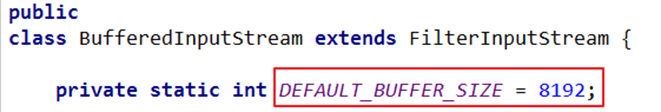
处理流与节点流的对比图示
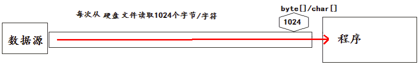
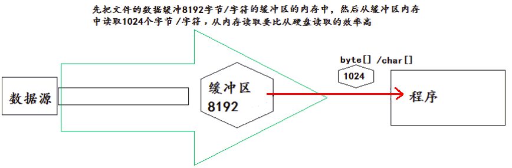
3. 使用说明
- 当读取数据时，数据按块读入缓冲区，其后的读操作则直接访问缓冲区。
- 当使用 BufferedInputStream读取字节文件时，BufferedInputStream会一次性从文件中读取8192个(8Kb)，存在缓冲区中，直到缓冲区装满了，才重新从文件中读取下一个8192个字节数组。
- 向流中写入字节时，不会直接写到文件，先写到缓冲区中直到缓冲区写满，BufferedOutputStream才会把缓冲区中的数据一次性写到文件里。使用方法flush()可以强制将缓冲区的内容全部写入输出流。
- 关闭流的顺序和打开流的顺序相反。只要关闭最外层流即可，关闭最外层流也会相应关闭内层节点流。
- flush()方法的使用：手动将buffer中内容写入文件。
- 如果是带缓冲区的流对象的close()方法，不但会关闭流，还会在关闭流之前刷新缓冲区，关闭后不能再写出。
代码示例：
3.1使用BufferInputStream和BufferOutputStream实现非文本文件的复制
1 |
|
3.2 使用BufferedReader和BufferedWriter实现文本文件的复制
1 |
|
4. 小练习
4.1测试缓冲流和节点流文件复制速度
节点流实现复制方法
1 | //指定路径下文件的复制 |
缓冲流实现复制操作
1 | //实现文件复制的方法 |
测试二者速度
1 |
|
4.2实现图片加密操作
加密操作
- 将图片文件通过字节流读取到程序中
- 将图片的字节流逐一进行^操作
- 将处理后的图片字节流输出
1 | //图片的加密 |
解密操作
- 将加密后图片文件通过字节流读取到程序中
- 将图片的字节流逐一进行^操作（原理：A^B^B = A）
- 将处理后的图片字节流输出
1 | //图片的解密 |
4.3 统计文本字符出现次数
实现思路：
- 遍历文本每一个字符
- 字符出现的次数存在Map中
- 把map中的数据写入文件
1 |
|
五、转换流
1. 简介
- 转换流提供了在字节流和字符流之间的转换
- Java API提供了两个转换流：
- InputstreamReader：将 Inputstream转换为Reader
- OutputStreamWriter：将 Writer转换为OutputStream
- 字节流中的数据都是字符时，转成字符流操作更高效。
- 很多时候我们使用转换流来处理文件乱码问题。实现编码和解码的功能。
1.1 InputStreamReader
InputStreamReader将一个字节的输入流转换为字符的输入流 解码：字节、字节数组 —>字符数组、字符串
构造器：
- public InputStreamReader(InputStream in)
- public InputStreamReader(Inputstream in,String charsetName)//可以指定编码集
1.2 OutputStreamWriter
OutputStreamWriter将一个字符的输出流转换为字节的输出流 编码：字符数组、字符串 —> 字节、字节数组
构造器：
- public OutputStreamWriter(OutputStream out)
- public OutputStreamWriter(Outputstream out,String charsetName)//可以指定编码集
图示：
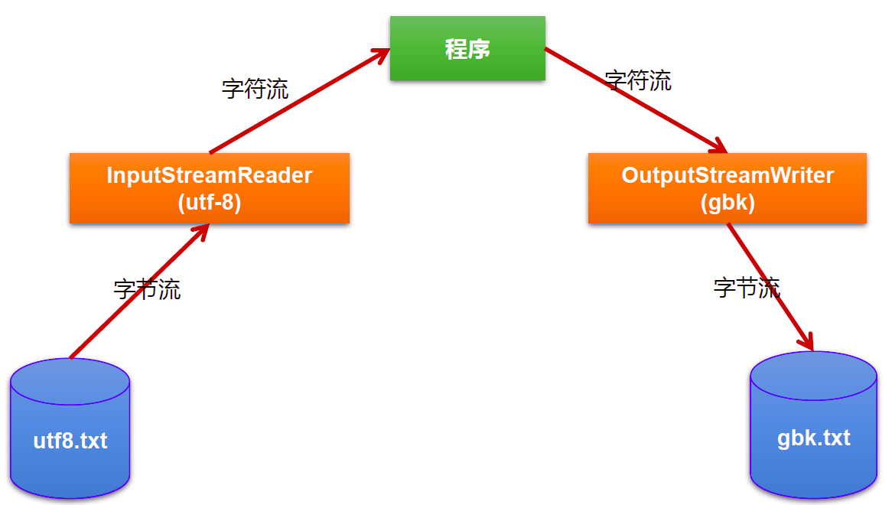
2.代码示例：
1 | /** |
说明：文件编码的方式（比如：GBK），决定了解析时使用的字符集（也只能是GBK）。
3. 编码集
3.1 常见的编码表
- ASCII：美国标准信息交换码。用一个字节的7位可以表示。
- ISO8859-1：拉丁码表。欧洲码表用一个字节的8位表示。
- GB2312：中国的中文编码表。最多两个字节编码所有字符
- GBK：中国的中文编码表升级，融合了更多的中文文字符号。最多两个字节编码
- Unicode：国际标准码，融合了目前人类使用的所字符。为每个字符分配唯一的字符码。所有的文字都用两个字节来表示。
- UTF-8：变长的编码方式，可用1-4个字节来表示一个字符。
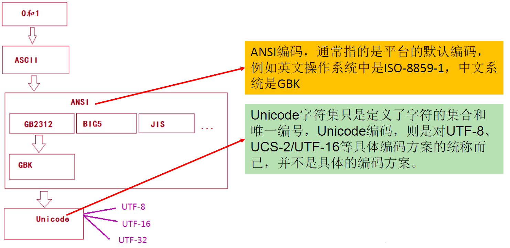
说明：
- 面向传输的众多UTF(UCS Transfer Format)标准出现了，顾名思义，UTF-8就是每次8个位传输数据，而UTF-16就是每次16个位。这是为传输而设计的编码，并使编码无国界，这样就可以显示全世界上所有文化的字符了。
- Unicode只是定义了一个庞大的、全球通用的字符集，并为每个字符规定了唯确定的编号，具体存储成什么样的字节流，取决于字符编码方案。推荐的Unicode编码是UTF-8和UTF-16。
UTF-8变长编码表示
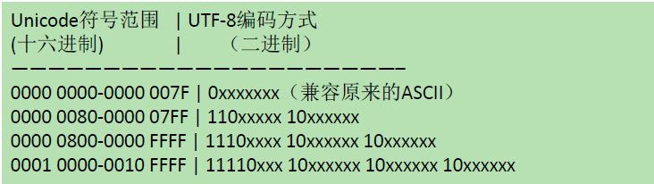
3.2 编码应用
- 编码：字符串–>字节数组
- 解码：字节数组–>字符串
- 转换流的编码应用
- 可以将字符按指定编码格式存储
- 可以对文本数据按指定编码格式来解读
- 指定编码表的动作由构造器完成
使用要求：
客户端/浏览器端 <—-> 后台(java,GO,Python,Node.js,php) <—-> 数据库
要求前前后后使用的字符集都要统一：UTF-8.
六、标准输入、输出流
1.简介
System.in:标准的输入流，默认从键盘输入
System.out:标准的输出流，默认从控制台输出
2. 主要方法
System类的setIn(InputStream is) 方式重新指定输入的流
System类的setOut(PrintStream ps)方式重新指定输出的流。
3. 使用示例
从键盘输入字符串，要求将读取到的整行字符串转成大写输出。然后继续进行输入操作，
直至当输入“e”或者“exit”时，退出程序。
设计思路
方法一：使用Scanner实现，调用next()返回一个字符串
方法二：使用System.in实现。System.in —> 转换流 —> BufferedReader的readLine()
1 | public static void main(String[] args) { |
4. 小练习
设计实现Scanner类
1 | public class MyInput { |
七、打印流
PrintStream 和 PrintWriter 说明：
- 提供了一系列重载的print()和println()方法，用于多种数据类型的输出
- System.out返回的是PrintStream的实例
1 |
|
八、数据流
DataInputStream 和 DataOutputStream 作用： 用于读取或写出基本数据类型的变量或字符串
示例代码：
将内存中的字符串、基本数据类型的变量写出到文件中。
1 |
|
将文件中存储的基本数据类型变量和字符串读取到内存中，保存在变量中。
1 | /* |
九、对象流
1.对象流：
ObjectInputStream 和 ObjectOutputStream
2.作用：
- ObjectOutputStream:内存中的对象—>存储中的文件、通过网络传输出去：序列化过程
- ObjectInputStream:存储中的文件、通过网络接收过来 —>内存中的对象：反序列化过程
3. 对象的序列化
- 对象序列化机制允许把内存中的Java对象转换成平台无关的二进制流，从而允许把这种二进制流持久地保存在磁盘上，或通过网络将这种二进制流传输到另一个网络节点。//当其它程序获取了这种二进制流，就可以恢复成原来的Java对象。
- 序列化的好处在于可将任何实现了Serializable接口的对象转化为字节数据，使其在保存和传输时可被还原。
- 序列化是RMI(Remote Method Invoke-远程方法调用)过程的参数和返回值都必须实现的机制，RMI是JavaEE的基础。因此序列化机制是JavaEE平台的基础。
- 如果需要让某个对象支持序列化机制，则必须让对象所属的类及其属性是可序列化的，为了让某个类是可序列化的，该类必须实现如下两个接口之一。否则，会抛出 NotserializableEXception异常
- Serializable
- Externalizable
- 凡是实现Serializable接口的类都有一个表示序列化版本标识符的静态变量：
- private static final long serialVersionUID;
- serialVersionUID用来表明类的不同版本间的兼容性。简言之，其目的是以序列化对象进行版本控制，有关各版本反序列化时是否兼容
- 如果类没有显示定义这个静态常量，它的值是Java运行时环境根据类的内部细节自动生成的。若类的实例变量做了修改，serialVersionUID可能发生变化。故建议显式声明。
- 简单来说，Java的序列化机制是通过在运行时判断类的serialversionUID来验证版本一致性的。在进行反序列化时，JVM会把传来的字节流中的serialversionUID与本地相应实体类的serialversionUID进行比较，如果相同就认为是一致的，可以进行反序列化，否则就会出现序列化版本不一致的异常。(InvalidCastException)
4.实现序列化的对象所属的类需要满足：
- 需要实现接口：Serializable（标识接口）
- 当前类提供一个全局常量：serialVersionUID（序列版本号）
- 除了当前Person类需要实现Serializable接口之外，还必须保证其内部所属性也必须是可序列化的。（默认情况下，基本数据类型可序列化）
补充：ObjectOutputStream和ObjectInputStream不能序列化static和transient修饰的成员变量
5. 对象流的使用
5.1序列化代码实现
序列化：将对象写入磁盘或进行网络传输
要求被序列化对象必须实现序列化
1 |
|
5.2 反序列化代码实现
反序列化：将磁盘的对象数据源读出
1 |
|
十、任意存取文件流
RandomAccessFile的使用
1.简介
- RandomAccessFile直接继承于java.lang.Object类，实现了DataInput和DataOutput接口
- RandomAccessFile既可以作为一个输入流，又可以作为一个输出流
- RandomAccessFile类支持“随机访问”的方式，程序可以直接跳到文件的任意地方来读、写文件
- 支持只访问文件的部分内容
- 可以向已存在的文件后追加内容
- RandomAccessFile对象包含一个记录指针，用以标示当前读写处的位置
- RandomaccessFile类对象可以自由移动记录指针：
- long getFilePointer()：获取文件记录指针的当前位置
- void seek(long pos)：将文件记录指针定位到pos位置
构造器
public RandomAccessFile(File file,String mode)
public RandomAccessFile(String name,String mode)
2.使用说明：
- 如果RandomAccessFile作为输出流时，写出到的文件如果不存在，则在执行过程中自动创建。
- 如果写出到的文件存在，则会对原文件内容进行覆盖。（默认情况下，从头覆盖）
- 可以通过相关的操作，实现RandomAccessFile“插入”数据的效果。借助seek(int pos)方法
- 创建RandomAccessFile类实例需要指定一个mode参数，该参数指定RandomAccessFile的访问模式:
- r：以只读方式打开
- rw：打开以便读取和写入
- rwd：打开以便读取和写入；同步文件内容的更新
- rws：打开以便读取和写入；同步文件内容和元数据的更新
- 如果模式为只读r,则不会创建文件，而是会去读取一个已经存在的文件,读取的文件不存在则会出现异常。如果模式为rw读写,文件不存在则会去创建文件，存在则不会创建。
3. 使用示例
文件的读取和写出操作
1 |
|
使用RandomAccessFile实现数据的插入效果
1 |
|
十一、流的基本应用总结
流是用来处理数据的。
处理数据时，一定要先明确数据源，与数据目的地数据源可以是文件，可以是键盘数据目的地可以是文件、显示器或者其他设备
而流只是在帮助数据进行传输，并对传输的数据进行处理，比如过滤处理、转换处理等
除去RandomAccessFile类外所有的流都继承于四个基本数据流抽象类InputSteam、OutputSteam、Reader、Writer
不同的操作流对应的后缀均为四个抽象基类中的某一个
不同处理流的使用方式都是标准操作：
- 创建文件对象，创建相应的流
- 处理流数据
- 关闭流
- 用try-catch-finally处理异常
十二、NIO
Path、Paths、Files的使用，介绍比较简单，后期会再抽时间详细写有关NIO的博客。
1.NIO的使用说明：
- Java NIO (New IO，Non-Blocking IO)是从Java 1.4版本开始引入的一套新的IO API，可以替代标准的Java IO AP。
- NIO与原来的IO同样的作用和目的，但是使用的方式完全不同，NIO支持面向缓冲区的(IO是面向流的)、基于通道的IO操作。
- NIO将以更加高效的方式进行文件的读写操作。
- JDK 7.0对NIO进行了极大的扩展，增强了对文件处理和文件系统特性的支持，称他为 NIO.2。
1 | Java API中提供了两套NIO，一套是针对标准输入输出NIO，另一套就是网络编程NIO |
2.Path接口 —JDK 7.0提供
- 早期的Java只提供了一个File类来访问文件系统，但File类的功能比较有限，所提供的方法性能也不高。而且，大多数方法在出错时仅返回失败，并不会提供异常信息。
- NIO.2为了弥补这种不足，引入了Path接口，代表一个平台无关的平台路径，描述了目录结构中文件的位置。Path可以看成是File类的升级版本，实际引用的资源也可以不存在。
2.1Path的说明：
Path替换原有的File类。
- 在以前IO操作都是这样写的：
- import java.io.File
- File file = new File(“index.html”);
- 但在Java7中，我们可以这样写：
- import java.nio.file.Path;
- import java.nio.file.Paths;
- Path path = Paths.get(“index. html”);
2.2 Paths的使用
- Paths类提供的静态get()方法用来获取Path对象：
- static Path get(String first， String….more)：用于将多个字符串串连成路径
- static Path get(URI uri)：返回指定uri对应的Path路径
代码示例
1 |
|
2.3 常用方法
- String toString() ： 返回调用 Path 对象的字符串表示形式
- boolean startsWith(String path) : 判断是否以 path 路径开始
- boolean endsWith(String path) : 判断是否以 path 路径结束
- boolean isAbsolute() : 判断是否是绝对路径
- Path getParent() ：返回Path对象包含整个路径，不包含 Path 对象指定的文件路径
- Path getRoot() ：返回调用 Path 对象的根路径
- Path getFileName() : 返回与调用 Path 对象关联的文件名
- int getNameCount() : 返回Path 根目录后面元素的数量
- Path getName(int idx) : 返回指定索引位置 idx 的路径名称
- Path toAbsolutePath() : 作为绝对路径返回调用 Path 对象
- Path resolve(Path p) :合并两个路径，返回合并后的路径对应的Path对象
- File toFile(): 将Path转化为File类的对象
代码示例
1 |
|
3.Files类
java.nio.file.Files用于操作文件或目录的工具类
3.1 Files类常用方法
Path copy(Path src, Path dest, CopyOption … how) : 文件的复制
要想复制成功，要求path1对应的物理上的文件存在。path1对应的文件没有要求。
Files.copy(path1, path2, StandardCopyOption.REPLACE_EXISTING);
Path createDirectory(Path path, FileAttribute<?> … attr) : 创建一个目录
要想执行成功，要求path对应的物理上的文件目录不存在。一旦存在，抛出异常。
Path createFile(Path path, FileAttribute<?> … arr) : 创建一个文件
要想执行成功，要求path对应的物理上的文件不存在。一旦存在，抛出异常。
void delete(Path path) : 删除一个文件/目录，如果不存在，执行报错
void deleteIfExists(Path path) : Path对应的文件/目录如果存在，执行删除.如果不存在，正常执行结束
Path move(Path src, Path dest, CopyOption…how) : 将 src 移动到 dest 位置
要想执行成功，src对应的物理上的文件需要存在，dest对应的文件没有要求。
long size(Path path) : 返回 path 指定文件的大小
代码示例
1 |
|
3.2 Files类常用方法：用于判断
boolean exists(Path path, LinkOption … opts) : 判断文件是否存在
boolean isDirectory(Path path, LinkOption … opts) : 判断是否是目录
不要求此path对应的物理文件存在。
boolean isRegularFile(Path path, LinkOption … opts) : 判断是否是文件
boolean isHidden(Path path) : 判断是否是隐藏文件
要求此path对应的物理上的文件需要存在。才可判断是否隐藏。否则，抛异常。
boolean isReadable(Path path) : 判断文件是否可读
boolean isWritable(Path path) : 判断文件是否可写
boolean notExists(Path path, LinkOption … opts) : 判断文件是否不存在
代码示例
1 |
|
补充：
- StandardOpenOption.READ:表示对应的Channel是可读的。
- StandardOpenOption.WRITE：表示对应的Channel是可写的。
- StandardOpenOption.CREATE：如果要写出的文件不存在，则创建。如果存在，忽略
- StandardOpenOption.CREATE_NEW：如果要写出的文件不存在，则创建。如果存在，抛异常
3.3 Files类常用方法：用于操作内容
- InputStream newInputStream(Path path, OpenOption…how):获取 InputStream 对象
- OutputStream newOutputStream(Path path, OpenOption…how) : 获取 OutputStream 对象
- SeekableByteChannel newByteChannel(Path path, OpenOption…how) : 获取与指定文件的连接，how 指定打开方式。
- DirectoryStream
newDirectoryStream(Path path) : 打开 path 指定的目录
代码示例
1 |
|
十四、网络编程
一、概述
- 计算机网络：
- 把分布在不同地理区域的计算机与专门的外部设备用通信线路互连成一个规模大、功能强的网络系统，从而使众多的计算机可以方便地互相传递信息共享硬件、软件、数据信息等资源。
- 网络编程的目的: 直接或间接地通过网络协议与其它计算机实现数据交换，进行通讯
- 实现网络通信需要解决的两个问题:
- 如何准确地定位网络上一台或多台主机；定位主机上的特定的应用
- 找到主机后如何可靠高效地进行数据传输
二、网络通讯要素
- 解决问题一：IP和端口号
- 解决问题二：提供网络通信协议：TCP/IP参考模型（应用层、传输层、网络层、物理+数据链路层）
网络通讯协议
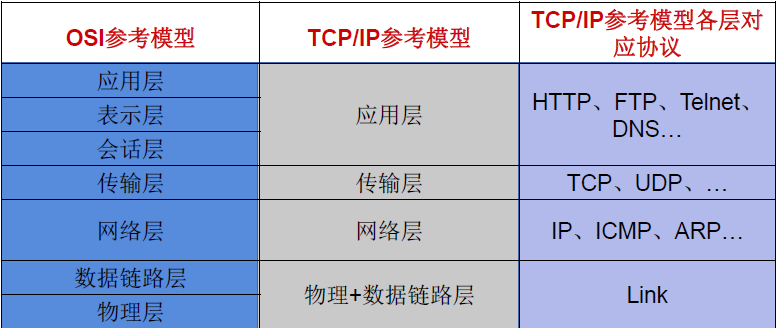
通讯过程
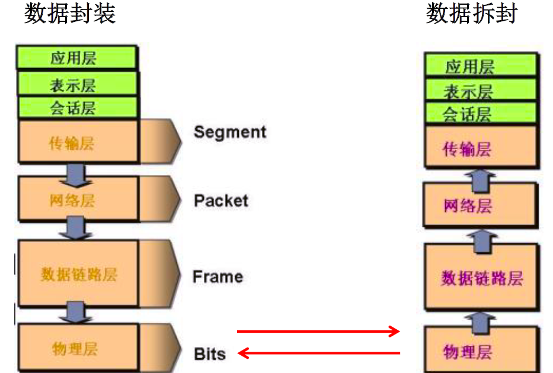
3. 通讯要素一：IP和端口号
3.1 IP的理解
IP:唯一的标识 Internet 上的计算机（通信实体）
在Java中使用InetAddress类代表IP
IP分类：IPv4 和 IPv6 ; 万维网 和 局域网
域名: 通过域名解析服务器将域名解析为IP地址 www.baidu.com www.mi.com www.jd.com
域名解析：域名容易记忆，当在连接网络时输入一个主机的域名后，域名服务器(DNS)负责将域名转化成IP地址，这样才能和主机建立连接。
本地回路地址：127.0.0.1 对应着：localhost
3.2 端口号：
用于标识正在计算机上运行的进程。
- 要求：不同的进程不同的端口号
- 范围：被规定为一个 16 位的整数 0~65535。
- 分类：
- 公认端口：0~1023.被预先定义的服务通信占用（如：HTTP占用端口80，FTP占用端口21，TeInet占用端口23）。
- 注册端口：1024~49151.分配给用户进程或应用程序。（如：Tomcat占用端口8080，MSQL占用端口3306，Oracle占用端口1521等）。
- 动态私有端口：49152~65535。
3.3 InetAddress类
此类的一个对象就代表着一个具体的IP地址
3.2.1实例化
getByName(String host) /getLocalHost()
3.2.2常用方法
getHostName() / getHostAddress()
1 | public class InetAddressTest { |
4. 通信要素二：网络通信协议
4.1分层模型
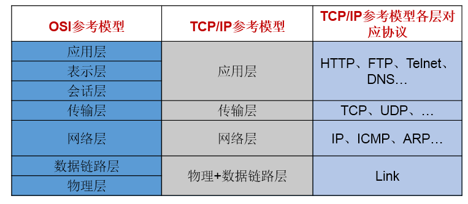
4.2 TCP和UDP的区别
TCP协议：
- 使用TCP协议前，须先建立TCP连接，形成传输数据通道
- 传输前，采用“三次握手”方式，点对点通信，是可靠的
- TCP协议进行通信的两个应用进程：客户端、服务端。
- 在连接中可进行大数据量的传输
- 传输完毕，需释放已建立的连接，效率低
UDP协议：
- 将数据、源、目的封装成数据包，不需要建立连接
- 每个数据报的大小限制在64K内
- 发送不管对方是否准备好，接收方收到也不确认，故是不可靠的
- 可以广播发送
- 发送数据结束时无需释放资源，开销小，速度快
4.3 TCP三次握手和四次挥手
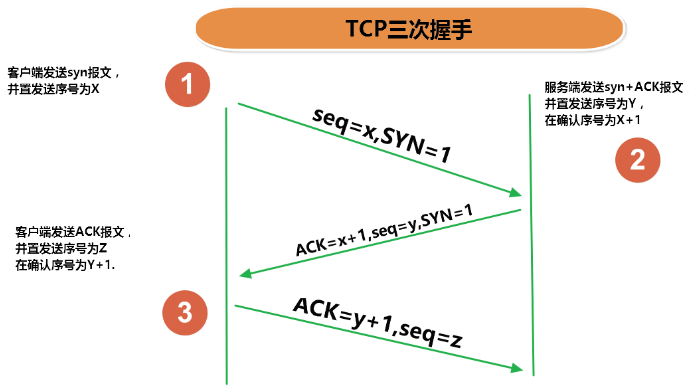
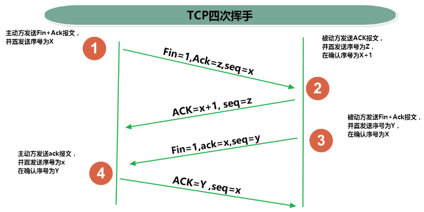
5. 套接字Socket
端口号与IP地址的组合得出一个网络套接字：Socket
- 利用套接字(Socket)开发网络应用程序早已被广泛的采用，以至于成为事实上的标准。
- 网络上具有唯一标识的P地址和端口号组合在一起才能构成唯一能识别的标识符套接字。
- 通信的两端都要有 Socket，是两台机器间通信的端点。
- 网络通信其实就是 Socket间的通信
- Socket允许程序把网络连接当成一个流，数据在两个Socket间通过IO传输。
- 一般主动发起通信的应用程序属客户端，等待通信请求的为服务端
- Socket分类
- 流套接字(stream socket)：使用TCP提供可依赖的字节流服务
- 数据报套接字(datagram socket)：使用UDP提供“尽力而为”的数据报服务
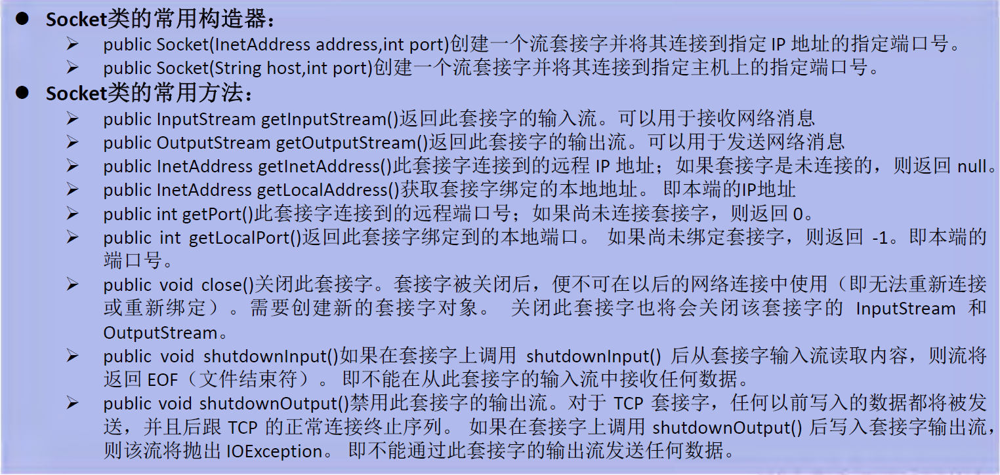
三、TCP网络编程
Java语言的基于套接字Socket编程分为客户端和服务端
基于TCP的Socket通信模型
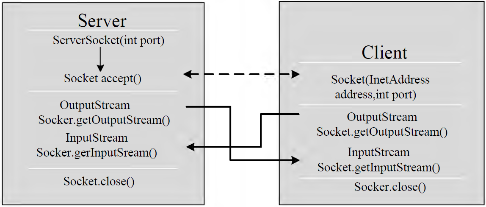
1.基于Socke的TCP编程
1.1客户端Socket的工作过程
- 创建Socket：根据指定服务端的P地址或端口号构造Sσcket类对象。若服务器端响应，则建立客户端到服务器的通信线路。若连接失败，会出现异常。
- 打开连接到 Socket的输入出流：使用getInputstream()方法获得输入流，使用getOutputStream()方法获得输出流，进行数据传输
- 按照一定的协议对Socket进行读/写操作：通过输入流读取服务器放入线路的信息（但不能读取自己放入线路的信息），通过输出流将信息写入线程
- 关闭 Socket：断开客户端到服务器的连接，释放线路
说明：
- 客户端程序可以使用Socket类创建对象，创建的同时会自动向服务器方发起连接。
- Socket的构造器是：
- Socket(String host，int port) throws UnknownHostException，EXCeption：向服务器（域名是host,端口号为port）发起TCP连接，若成功，则创建Socket对象，否则抛出异常。
- Socket(InetAddress address，int port)throws IOException：根据InetAddress对象所表示的IP地址以及端口号port发起连接
- 客户端建立 socketAtClient对象的过程就是向服务器发出套接字连接请求
1.2 服务器端Socket的工作过程：
- 调用ServerSocket(int port)：创建一个服务器端套接字，并绑定到指定端口上。用于监听客户端的请求。
- 调用accept0()：监听连接请求，如果客户端请求连接，则接受连接，返回通信套接字对象。
- 调用该Socket类对象的getOutputStream()和getInputStream()：获取输出流和输入流，开始网络数据的发送和接收。
- 关闭 ServerSocket和Socket对象：客户端访问结束，关闭通信套接字。
说明：
- ServerSocket对象负责等待客户端请求建立套接字连接，类似邮局某个窗口中的业务员。也就是说，服务器必须事先建立一个等待客户请求建立套接字连接的 Server Socket对象。
- 所谓“接收”客户的套接字请求，就是 accept()方法会返回一个Socket对象
1.3 代码示例
例子1：客户端发送信息给服务端，服务端将数据显示在控制台上
1 | public class TCPTest1 { |
例题2：客户端发送文件给服务端，服务端将文件保存在本地。
1 | public class TCPTest2 { |
例题3：从客户端发送文件给服务端，服务端保存到本地。并返回“发送成功”给客户端。
1 | public class TCPTest3 { |
四、UDP网络编程
1. 简述
- 类DatagramSocket和DatagramPacket实现了基于UDP协议网络程序。
- UDP数据报通过数据报套接字DatagramSocket发送和接收，系统不保证UDP数据报一定能够安全送到目的地，也不能确定什么时候可以抵达。
- DatagramPacket对象封装了UDP数据报，在数据报中包含了发送端的IP地址和端口号以及接收端的IP地址和端口号
- UDP协议中每个数据报都给出了完整的地址信息，因此无须建立发送方和接收方的连接。如同发快递包裹一样。
2. DatagramSocket类常用方法
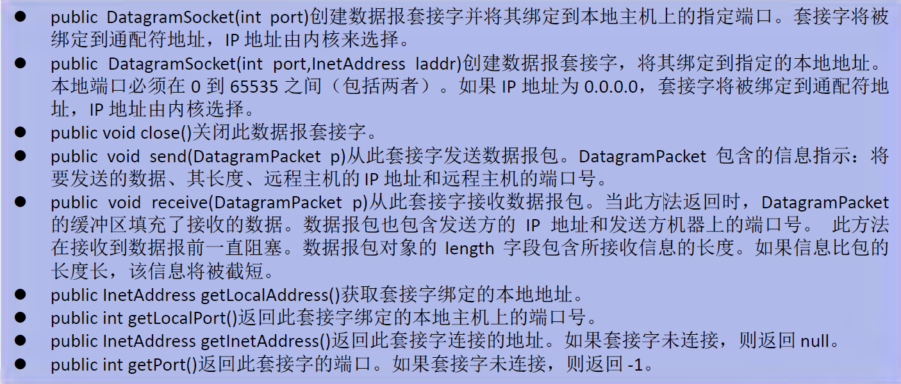
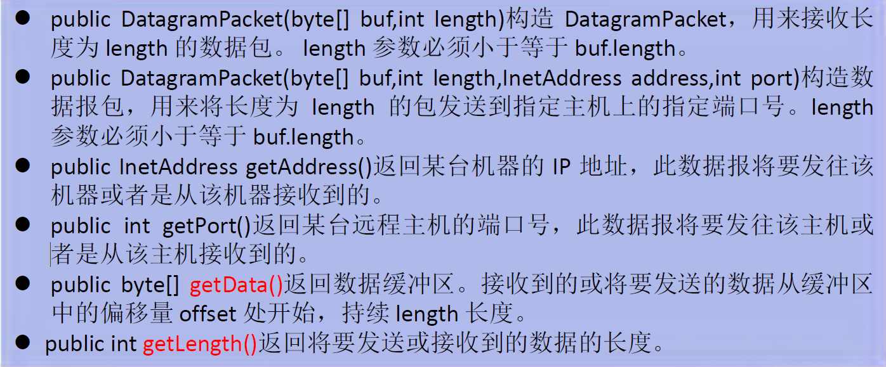
3. DatagramSocket类的使用
流程：
- DatagramSocket与DatagramPacket
- 建立发送端，接收端
- 建立数据包
- 调用 Socket的发送、接收方法
- 关闭 Socket
注意：发送端与接收端是两个独立的运行程序
代码示例：
1 | public class UDPTest { |
五、URL编程
- URL(Uniform Resource Locator)：统一资源定位符，它表示Internet上某一资源的地址。
- 它是一种具体的URI，即URL可以用来标识一个资源，而且还指明了如何locate这个资源。
- 通过URL我们可以访问 Internet上的各种网络资源，比如最常见的www，ftp站点。浏览器通过解析给定的URL可以在网络上查找相应的文件或其他资源
- URL的基本结构由5部分组成: <传输协议>：//<主机名>：<端口号>/<文件名>#片段名？参数列表 例如： http://192.168.1.100:8080/helloworld/indexjsp#a?username=shkstart&password=123 #片段名：即锚点，例如看小说，直接定位到章节 参数列表格式：参数名=参数值&参数名=参数值…
1. URL类
1.1 构造器
为了表示URL，java.net中实现了类URL。我们可以通过下面的构造器来初始化一个URL对象
- public URL(String spec)：通过一个表示URL地址的字符串可以构造一个URL对象。 例如：URL url = new URL（”http://www.baidu.com/");
- public URL(URL context,String spec）：通过基URL和相对URL构造一个URL对象 例如： URL downloadeUrl = new URL（url,”download.html”);
- public URL(String protocol,String host,String file); 例如：new URL(“http”,”www.baidu.com",80,"download.html");
- public URL(String protocol,String host,int port,String file); 例如：new URL(“http”,”www.baidu.com",80,"download.html");
注意：URL类的构造器都声明抛出非运行时异常，必须要对这一异常进行处理，通常是用try-catch语句进行捕获。
1.2 方法
- public String getProtocol( ) 获取该URL的协议名
- public String getHost( ) 获取该URL的主机名
- public String getPort( ) 获取该URL的端口号
- public String getPath( ) 获取该URL的文件路径
- public String getFile( ) 获取该URL的文件名
- public String getQuery( ) 获取该URL的查询名
代码示例
1 | public class URLTest { |
例子：通过URL下载
1 | public class URLTest1 { |
十五、Java反射机制
一、反射的概述
1. 反射的简介
- Reflection（反射)是被视为==动态语言==的关键，反射机制允许程序在执行期借助于Reflection API取得任何类的内部信息，并能直接操作任意对象的内部属性及方法。
- 加载完类之后，在堆内存的方法区中就产生了一个Class类型的对象（一个类只有一个Class对象），这个对象就包含了完整的类的结构信息。我们可以通过这个对象看到类的结构。这个对象就像一面镜子，透过这个镜子看到类的结构，所以，我们形象的称之为：反射。
通常的方式：引入需要的“包类”名称—->通过“new”实例化—->获得实例化对象
反射的方式：实例化对象—->getClass()方法—->得到完整的“包类”名称
框架 = 注解 + 反射 + 设计模式
2. 反射动态性体现
只有当程序运行时我们才能知道调用的类
1 |
|
3. 反射机制提供的功能
- 在运行时判断任意一个对象所属的类
- 在运行时构造任意一个类的对象
- 在运行时判断任意一个类所具有的成员变量和方法
- 在运行时获取泛型信息
- 在运行时调用任意一个对象的成员变量和方法
- 在运行时处理注解
- 生成动态代理
代码示例
1 |
|
4. 相关API
- java.lang.Class:反射的源头
- java.lang.reflect.Method
- java.lang.reflect.Field
- java.lang.reflect.Constructor
- ….
二、Class类
1. Class简述
在Object类中定义了以下的方法，此方法将被所有子类继承：
public final Class getClass()
以上的方法返回值的类型是一个Class类，此类是Java反射的源头，实际上所谓反射从程序的运行结果来看也很好理解，即可以通过对象反射求出类的名称。
对象使用反射后可以得到的信息：某个类的属性、方法和构造器、某个类到底实现了哪些接口。对于每个类而言，JRE都为其保留一个不变的Class类型的对象。一个Class对象包含了特定某个结构（ class/interface/enum/annotation/primitive type/void/[]）的有关信息。
- Class本身也是一个类
- Class对象只能由系统建立对象
- 一个加载的类在JVM中只会有一个Class实例
- 一个Class对象对应的是一个加载到JVM中的一个.class文件
- 每个类的实例都会记得自己是由哪个Class实例所生成
- 通过Class可以完整地得到一个类中的所有被加载的结构
- Class类是Reflection的根源，针对任何你想动态加载、运行的类，唯有先获得相应的Class对象
类的加载过程：
- 程序经过javac.exe命令以后，会生成一个或多个字节码文件(.class结尾)。接着我们使用java.exe命令对某个字节码文件进行解释运行。相当于将某个字节码文件加载到内存中。此过程就称为类的加载。加载到内存中的类，我们就称为运行时类，此运行时类，就作为Class的一个实例。
- 换句话说，Class的实例就对应着一个运行时类。
- 加载到内存中的运行时类，会缓存一定的时间。在此时间之内，我们可以通过不同的方式来获取此运行时类。
==类本身也是一个对象~~~==
2. Class类的常用方法
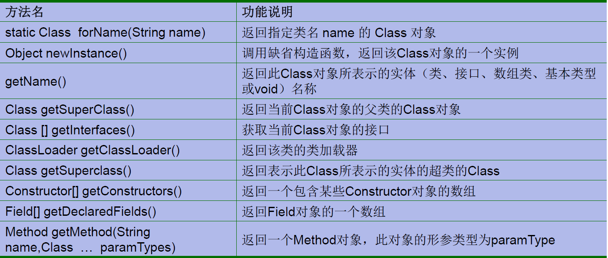
代码示例：
1 | //创建Class的实例 |
3. 获取Class实例的几种方式：
Class实例 对应着一个运行时类，加载到内存中的运行时类，会缓存一段时间，在此时间内，我们可以通过不同的方式来获取运行时类！
1）已知具体的类，通过类的class属性获取，该方法最为安全可靠，程序性能最高 实例：Class clazz = String.class;
2）已知某个类的实例，调用该实例的getclass()方法获取Class对象 实例：Class clazz=person.getclass();
3）已知一个类的全类名，且该类在类路径下，可通过Class类的静态方法forName()获取，可能抛出 ClassNotFoundException（比较常用） 实例：Class clazz = Class.forName(String classPath)
4）通过类加载器 ClassLoader cl = this.getclass().getClassLoader(); Class clazz = cl.loadClass("类的全类名");
代码示例
1 |
|
总结：创建类的对象的方式?
方式一：new + 构造器
方式二：要创建Xxx类的对象，可以考虑：Xxx、Xxxs、XxxFactory、XxxBuilder类中查看是否有静态方法的存在。可以调用其静态方法，创建Xxx对象。
方式三：通过反射
4. Class实例可以代表的结构
（1）class：外部类，成员（成员内部类，静态内部类），局部内部类，匿名内部类
（2）interface：接口
（3）[]：数组
（4）enum：枚举
（5）annotation：注解@interface
（6）primitive type：基本数据类型
（7）void
在Java中万事万物皆对象
代码示例
1 |
|
三、类的加载
1. 类的加载过程
当程序主动使用某个类时，如果该类还未被加载到内存中，则系统会通过以下三个步骤对该类进行初始化。
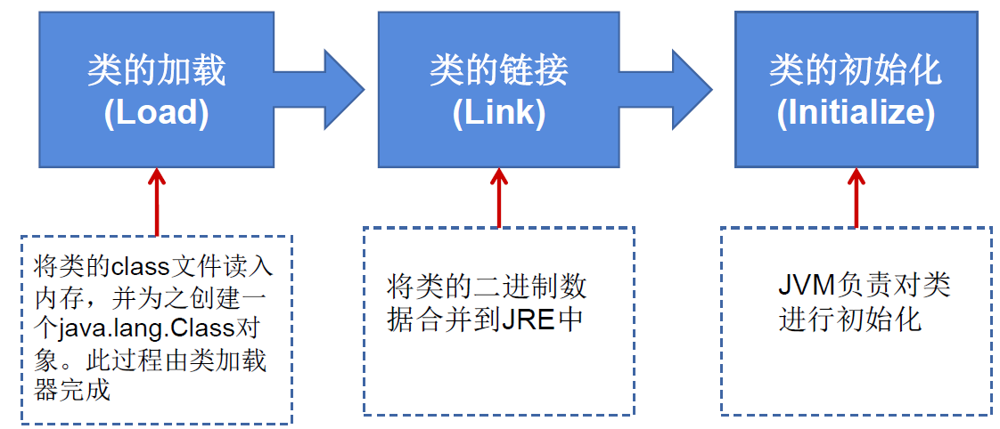
- 加载：将class文件字节码内容加载到内存中，并将这些静态数据转换成方法区的运行时数据结构，然后生成一个代表这个类的java.lang.Class对象，作为方法区中类数据的访问入口（即引用地址）。所有需要访问和使用类数据只能通过这个Class对象。这个加载的过程需要类加载器参与。
- 链接：将Java类的二进制代码合并到JVM的运行状态之中的过程。
- 验证：确保加载的类信息符合JVM规范，例如：以cafe开头，没有安全方面的问题。
- 准备：正式为类变量(static)分配内存并设置类变量默认初始值的阶段，这些内存都将在方法区中进行分配。
- 解析：虚拟机常量池内的符号引用（常量名）替换为直接引用（地址）的过程。
- 初始化：
- 执行类构造器
()方法的过程。类构造器 ()方法是由编译期自动收集类中所有类变量的赋值动作和静态代码块中的语句合并产生的。（类构造器是构造类信息的，不是构造该类对象的构造器）。 - 当初始化一个类的时候，如果发现其父类还没有进行初始化，则需要先触发其父类的初始化。
- 虚拟机会保证一个类的
()方法在多线程环境中被正确加锁和同步。
- 执行类构造器
代码示例：
1 | public class ClassLoadingTest{ |
2. Java类编译、运行的执行的流程
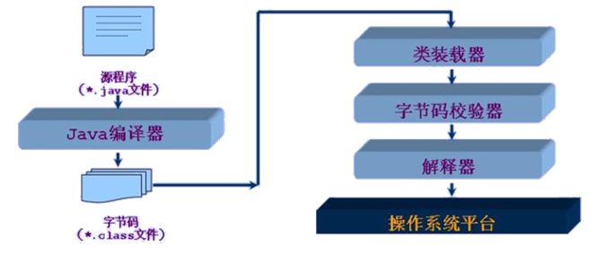
3. 类的加载器的作用
- 将class文件字节码内容加载到内存中，并将这些静态数据转换成方法区的运行时数据结构，然后在堆中生成一个代表这个类的java.lang.Class对象，作为方法区中类数据的访问入口。
- 类缓存：标准的 JavaSE类加载器可以按要求查找类，但一旦某个类被加载到类加载器中，它将维持加载（缓存）一段时间。不过JVM垃圾回收机制可以回收这些Class对象
4. 类的加载器的分类
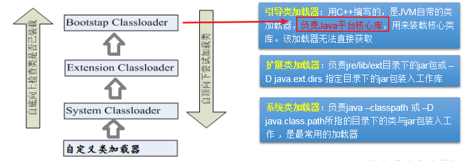
1 |
|
5. 使用Classloader加载src目录下的配置文件
1 |
|
四、反射的应用
1. 创建运行时类的对象
1.1代码举例
1 |
|
1.2 说明
newInstance():调用此方法，创建对应的运行时类的对象。内部调用了运行时类的空参的构造器。
要想此方法正常的创建运行时类的对象，要求：
- 运行时类必须提供空参的构造器
- 空参的构造器的访问权限得够。通常，设置为public。
在javabean中要求提供一个public的空参构造器。原因：
- 便于通过反射，创建运行时类的对象
- 便于子类继承此运行时类时，默认调用super()时，保证父类此构造器
2. 获取运行时类的完整结构
我们可以通过反射，获取对应的运行时类中所有的属性、方法、构造器、父类、接口、父类的泛型、包、注解、异常等。。。。
2.1 使用反射可以取得：
实现的全部接口： public Class<?>[] getInterfaces() 确定此对象所表示的类或接口实现的接口。
所继承的父类： public Class<? Super T> getSuperclass() 返回表示此Class所表示的实体（类、接口、基本类型）的父类的Class。
全部的构造器：
public Constructor
[] getConstructors() 返回此Class对象所表示的类的所有public构造方法。
public Constructor
[] getDeclaredConstructors() 返回此Class对象表示的类声明的所有构造方法。
在Constructor类中:
- 取得修饰符：public int getModifiers();
- 取得方法名称： public String getName();
- 取得参数的类型： public Class<?> getParameterTypes();
全部的方法：
public Method[] getDeclaredMethods()
返回此Class对象所表示的类或接口的全部方法
public Method[] getMethods()
返回此Class对象所表示的类或接口的public的方法
Method类中：
- public Class<?> getReturnType()取得全部的返回值
- public Class<?>[] getParameterTypes()取得全部的参数
- public int getModifiers()取得修饰符
- public Class<?> [] getEXceptionTypes()取得异常信息
全部的Field:
public Field[] getFields()
返回此Class对象所表示的类或接口的public的Field。
public Field[] getDeclaredFields()
返回此Class对象所表示的类或接口的全部Field
Field方法中
- public int getModifiers()以整数形式返回此Field的修饰符
- public Class<?> getType()得到Field的属性类型
- public String getName()返回Field的名称。
Annotation相关
get Annotation(Class
annotationClass) getDeclaredAnnotations()
泛型相关
获取父类泛型类型：Type getGenericSuperclass()
泛型类型：ParameterizedType
获取实际的泛型类型参数数组：getActualTypeArguments()
类所在的包 Package getPackage()
2.2 代码示例
获取属性Fieled
1 | public class FiledTest { |
获取方法Method
1 | public class MethodTest { |
获取其他结构
1 | public class OtherTest { |
3. 调用运行时类的指定结构
3.1 调用指定的属性
在反射机制中，可以直接通过Field类操作类中的属性，通过Field类提供的set()和get()方法就可以完成设置和取得属性内容的操作。
public Field getField(String name)返回此Class对象表示的类或接口的指定的public的Field。
public Field getDeclaredField(String name)返回此Class对象表示的类或接口的指定的Field。
在Field中:
public Object get(object obj)取得指定对象obj上此 Field的属性内容
public void set(Object obj,Object value)设置指定对象obj上此Field的属性内容
代码示例
1 |
|
3.2调用指定的方法（常用）
通过反射，调用类中的方法，通过Method类完成。步骤:
- 通过Class类的getMethod(String name,Class… parameterTypes)方法取得一个Method对象，并设置此方法操作时所需要的参数类型。
- 之后使用 Object invoke(Object obj， Object[] args)进行调用，并向方法中传递要设置的ob对象的参数信息。
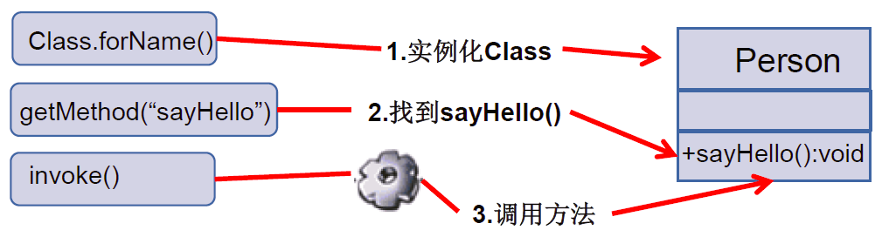
Object invoke(object obj,Object… args)方法：
- Object对应原方法的返回值，若原方法无返回值，此时返回null
- 若原方法若为静态方法，此时形参Object obj可为null
- 若原方法形参列表为空，则Object[] args为null
- 若原方法声明为private，则需要在调用此invoke()方法前，显式调用方法对象的setAccessible(true)方法，将可访问private的方法。
关于setAccessible方法的使用：
- Method和Field、Constructor对象都有setAccessible()方法。
- setAccessible是启动和禁用访问安全检查的开关
- 参数值为true则指示反射的对象在使用时应该取消Java语言访问检査。
- 提高反射的效率。如果代码中必须用反射，而该句代码需要频繁的被调用，那么请设置为true. 使得原本无法访问的私有成员也可以访问
- 参数值为false则指示反射的对象应该实施Java语言访问检査。
代码示例
1 |
|
3.3 调用指定的构造器
代码示例
1 |
|
4. 动态代理
4.1代理设计模式的原理:
使用一个代理将对象包装起来，然后用该代理对象取代原始对象。任何对原始对象的调用都要通过代理。代理对象决定是否以及何时将方法调用转到原始对象上。
4.2 静态代理
代码示例：
1 | interface ClothFactory{ |
静态代理的缺点：
① 代理类和目标对象的类都是在编译期间确定下来，不利于程序的扩展。
② 每一个代理类只能为一个接口服务，这样一来程序开发中必然产生过多的代理。
4.3 动态代理的特点：
动态代理是指客户通过代理类来调用其它对象的方法，并且是在程序运行时根据需要动态创建目标类的代理对象。
相比于静态代理的优点：
抽象角色中（接口）声明的所有方法都被转移到调用处理器一个集中的方法中处理，这样，我们可以更加灵活和统一的处理众多的方法。
4.4 动态代理的实现
4.4.1 需要解决的两个主要问题：
问题一：如何根据加载到内存中的被代理类，动态的创建一个代理类及其对象。
（通过 Proxy.newProxyInstance() 实现）
问题二：当通过代理类的对象调用方法a时，如何动态的去调用被代理类中的同名方法。
（通过 InvocationHandler 接口的实现类及其方法 invoke() )
4.4.2 动态代理相关的API：
Proxy：专门完成代理的操作类，是所有动态代理类的父类。通过此类为一个或多个接口动态地生成实现类。提供用于创建动态代理类和动态代理对象的静态方法。
static Class<?> getProxyClass(ClassLoader loader, Class<?>...interface)创建一个动态代理类所对应的Class对象static Object newProxyInstance(ClassLoader loader, Class<?>...interface, InvocationHandler h)直接创建一个动态代理对象
4.4.3 动态代理实现步骤：
- 创建一个实现接口
InvocationHandler的类，它必须实现invoke方法，以完成代理的具体操作。 - 创建被代理类以及接口
- 通过Proxy的静态方法
newProxyInstance(ClassLoader loader, Class<?>...interface, InvocationHandler h)创建一个接口代理 - 通过代理类的实例调用被代理类的方法
4.4.2 代码实现：
1 | interface Human { |
5. 动态代理与AOP
- 使用 Proxy生成一个动态代理时，往往并不会凭空产生一个动态代理，这样没有太大的意义。通常都是为指定的目标对象生成动态代理。
- 这种动态代理在AOP中被称为AOP代理，AOP代理可代替目标对象，AOP代理包含了目标对象的全部方法。但AOP代理中的方法与目标对象的方法存在差异：
- AOP代理里的方法可以在执行目标方法之前、之后插入一些通用处理
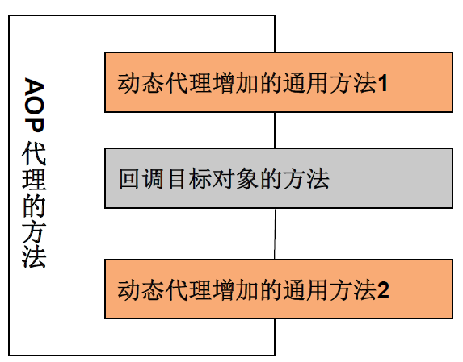
代码示例
1 | //公共接口 |